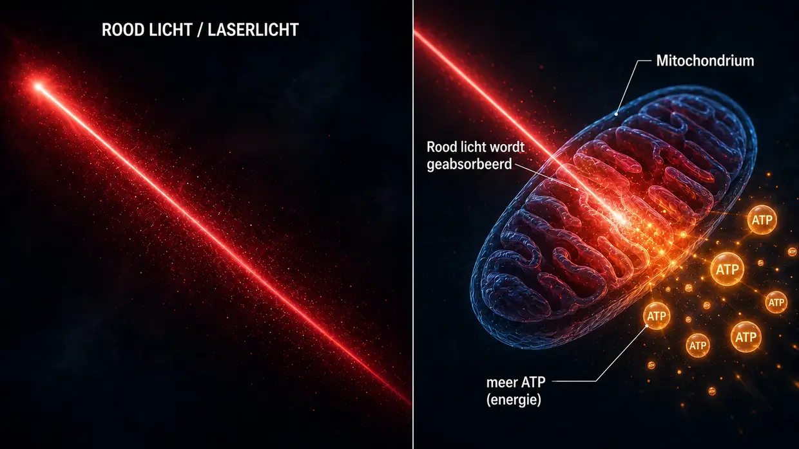
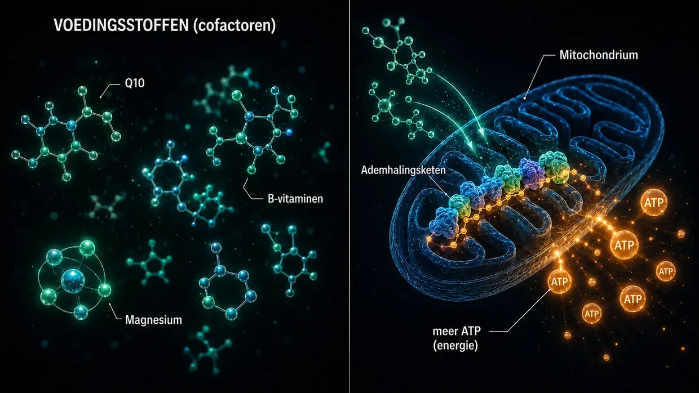

Wetenschappelijke bronnen & klinische evidentie
Deze pagina laat het fundament zien onder alles wat ik op deze website schrijf. Mijn model is mijn persoonlijke interpretatie van wat er bij mijn tinnitus op cellulair niveau is gebeurd. Maar de afzonderlijke bouwstenen — de crosslinkers tussen de actinefilamenten in de zintuighaartjes, de activering van calpaïnen door lawaai, de ATP-stofwisseling, het herstel door XIRP2, central gain in de hersenen, de lokale HPA-as in de cochlea en de mitochondriale werking van Q10, B-vitaminen en niacine — zijn geen onzin. Ze zijn in onderzoek gedocumenteerd en in de medische praktijk beproefd.
Inleiding: twee soorten evidentie
Eerst een eerlijke opmerking: ik zet op deze pagina twee soorten evidentie — bewust naast elkaar, zonder de ene bij voorbaat boven de andere te plaatsen.
Ten eerste: de mechanismestudies naar crosslinkers, calpaïnen en dergelijke uit het fundamentele onderzoek. Dit zijn peer-reviewed onderzoeken (beoordeeld door onafhankelijke vakgenoten) in tijdschriften als Nature Communications, Journal of Neuroscience, PNAS en eLife. Ze laten zien hoe de cellulaire machinerie — dus de processen in de afzonderlijke cellen — werkt: hoe crosslinkers de stereocilia stabiliseren, hoe calpaïnen door lawaai actief worden, hoe XIRP2 breuken provisorisch stabiliseert en hoe verhoging van de ATP-productie het gehoor na lawaaischade herstelt voor zover de individuele lichamelijke capaciteit dat toelaat. Deze studies zijn onmisbaar om mijn model voor tinnitus door lawaai te begrijpen.
Ten tweede: de evidentie uit de klinische praktijk van ervaren artsen — dus wat ervaren artsen jarenlang rechtstreeks bij echte patiënten hebben gezien en gedocumenteerd. Daaronder vallen stemmen als die van dr. Lutz Wilden, die sinds 1987 — dus al meer dan 35 jaar — voortdurend patiënten met binnenoorproblemen behandelt met low-level-lasertherapie en standaard audiogrammen van vóór en na de behandeling documenteert. Daarbij komen duizenden gebruikers van thuislasers wereldwijd, die hun zelfbehandeling met controleaudiometrie begeleiden. In Zwitserland heeft Tinnitool sinds de jaren negentig eveneens duizenden patiënten behandeld volgens dezelfde werkingslogica (LLLT → verhoging van de ATP-productie in de gehoorcellen). Verder zijn er de Hahn-groep in Praag (540 patiënten in twee gepubliceerde studies), de Universiteit van Kyoto in Japan en een Braziliaanse onderzoeksgroep — telkens met meetbare verbeteringen zodra de laser krachtig genoeg was. De studies met een te zwakke laser die bij een eerlijke test niets vonden, plaats ik verderop eerlijk in perspectief. En er is dr. Dietrich Klinghardt met zijn tientallen jaren werk rond belasting door zware metalen en toxines. Deze praktijkervaring is grotendeels niet in de grote vaktijdschriften zoals Nature Communications gepubliceerd — en daarvoor bestaan redenen waar Wilden zelf over spreekt. Dat verandert niets aan het feit dat de afgelopen decennia een werkelijk aanzienlijk aantal echte patiënten langs deze weg is genezen, met audiometrische onderbouwing.
Waarom beide bronnen meetellen
Ik vind het eerlijker om beide evidentiebronnen naast elkaar te zetten dan te doen alsof alleen peer-reviewed onderzoek de enige waarheid is die serieus genomen mag worden. Naar mijn mening komt dit doordat een groot deel van het onderzoeksgeld voor tinnitus eerder naar de ontwikkeling van hoortoestellen en gepatenteerde geneesmiddelenpijplijnen gaat. Voor niet-patenteerbare combinaties van voedingsstoffen, specifieke hooggedoseerde laserprotocollen of ontgiftingsprotocollen bestaat eenvoudigweg geen institutionele onderzoeksinteresse.
Ik ben geen arts, wetenschapper of onderzoeker. Ik ben iemand die zelf tweemaal tinnitus heeft gehad en beide keren is genezen, en van wie de beschikbare audiometrische gegevens uitsluitend betrekking hebben op de eerste periode. Ik heb obsessief veel gelezen, onderzocht en uitgeprobeerd. Als ik hier een studie of een arts citeer, bewijst dat niet dat mijn weg bij jou werkt. Het betekent dat de afzonderlijke bouwstenen waarop ik me beroep, in onderzoek en praktijk serieus worden genomen. Raadpleeg bij acute klachten — vooral acute tinnitus of gehoorverlies — eerst een kno-arts om organische oorzaken te laten onderzoeken.
Eén ding vooraf, voordat we in de details duiken: de belangrijkste bevinding uit al mijn speurwerk is een patroon dat ik steeds opnieuw tegenkwam — overal waar de energieproductie in de haarcellen merkbaar werd opgevoerd, verbeterde de tinnitus. Drie totaal verschillende wegen, één gemeenschappelijke noemer. Verderop laat ik je dit uitvoerig zien: wie er meteen naartoe wil springen, klikt hier. De rest neem ik eerst mee naar het fundament: hoe het oor is opgebouwd en wat er daarbij kapotgaat.
Deel 1: mechanismestudies uit het fundamentele onderzoek
Crosslinkers tussen de actinefilamenten in stereocilia
Op de hoofdpagina vergelijk ik de zintuighaartjes met een bundel ongekookte spaghetti die door korte eiwitbruggen — de crosslinkers — bij elkaar wordt gehouden. Die crosslinkers zijn geen uitvinding van mij. Het zijn drie concrete eiwitfamilies — Plastin/Fimbrin (PLS1), Espin (ESPN) en Fascin-2 (FSCN2) — waarvan het bestaan en de functie in de zintuighaartjes al meer dan twintig jaar moleculair zijn gedocumenteerd.
Krey JF, Krystofiak ES, Dumont RA, et al. (2016). Plastin 1 widens stereocilia by transforming actin filament packing from hexagonal to liquid. Journal of Cell Biology, 215(4), 467–482. PMID: 27811163. Link
De sleutelstudie voor het kwantificeren van crosslinkers. Met massaspectrometrie toonden Krey et al. aan dat één stereocilium ongeveer 30.500 Plastin-1-moleculen, 16.100 Fascin-2-moleculen en 14.800 Espin-moleculen tussen de actinefilamenten bevat. Na actine zelf is Plastin-1 het op één na meest voorkomende eiwit in het hele stereocilium. Muizen zonder functioneel Plastin-1 of Fascin-2 vertoonden een verminderde gehoorfunctie; dubbelmutanten waren het zwaarst getroffen. Stereocilia zonder Plastin-1 zijn korter en dunner dan stereocilia van het wildtype. Dit is het rechtstreekse experimentele bewijs dat crosslinkers daadwerkelijk de structurele integriteit van de zintuighaartjes dragen.
Perrin BJ, Strandjord DM, Narayanan P, et al. (2013). β-Actin and Fascin-2 Cooperate to Maintain Stereocilia Length. Journal of Neuroscience, 33(19), 8114–8121. PMID: 23658152. Link
Rechtstreeks bewijs van wat er gebeurt wanneer Fascin-2 functioneel uitvalt: muizen met een Fascin-2-mutatie vertonen progressief gehoorverlies in de hoge frequenties en een specifieke verkorting van de tweede en derde rij stereocilia. De mutante Fascin-2-variant bindt nog wel aan actine, maar kan de filamenten niet meer effectief verknopen — en juist daardoor verliezen de haartjes hun lengte. Dit is hetzelfde structurele eindresultaat dat ik op de hoofdpagina beschrijf bij verlies van crosslinkers door lawaai, alleen hier gesimuleerd door een genetische mutatie in plaats van door calpaïnesplitsing.
Sekerková G, Zheng L, Loomis PA, et al. (2004). Espins are multifunctional actin cytoskeletal regulatory proteins in the microvilli of chemosensory and mechanosensory cells. Journal of Neuroscience, 24(23), 5445–5456. PMID: 15190118. Link
De structurele karakterisering van Espin als actine-crosslinker in stereocilia. Espin wordt geïdentificeerd als bundeleiwit voor de parallelle actinefilamenten en wordt niet door calcium geremd — belangrijk omdat de binnenkant van stereocilia tijdens de normale werking aan calciumschommelingen blootstaat. Muizen met defecte Espin-eiwitten zijn doof en hebben evenwichtsstoornissen. Espin-mutaties veroorzaken ook bij mensen erfelijke doofheid.
Wat dit alles samen betekent: als de drie crosslinkers — Plastin/Fimbrin, Espin en Fascin-2 — door een genetische mutatie of knock-out al tot gehoorverlies en structurele defecten aan stereocilia leiden, is het biologisch aannemelijk dat een verworven, door lawaai veroorzaakte calpaïnesplitsing van deze of verwante crosslinkers — zoals ik die op de hoofdpagina beschrijf — hetzelfde structurele eindresultaat kan hebben.
Activering van calpaïnen door lawaai
Bij lawaai stroomt er massaal calcium de haarcel in. Deze calciumoverbelasting activeert calpaïnen — calciumafhankelijke proteasen die vervolgens actineverknopende eiwitten splitsen. Twee onafhankelijke onderzoekslaboratoria hebben met verschillende calpaïneremmers aangetoond dat dit mechanisme werkelijk bestaat.
Lai R, Fang Q, Wu F, Pan S, Haque K, Sha SH. (2023). Prevention of noise-induced hearing loss by calpain inhibitor MDL-28170 is associated with upregulation of PI3K/Akt survival signaling pathway. Frontiers in Cellular Neuroscience, 17, 1199656. Link
Rechtstreeks bewijs voor het calpaïnemechanisme: lawaai activeert µ-calpaïne en m-calpaïne in de haarcellen, en de calpaïneremmer MDL-28170 voorkomt zowel gehoorverlies als verlies van synapsen. De studie laat daarnaast zien dat calpaïne het structurele eiwit α-fodrine splitst — een spectrine-actineverknoper in de celcortex. Dat is niet exact hetzelfde type crosslinker als het voor stereocilia specifieke Plastin/Espin/Fascin-2, maar het toont aan dat calpaïne bij lawaai wordt geactiveerd en actineverknopende eiwitten aanvalt. Dat daarbij ook de crosslinkers van stereocilia getroffen zouden kunnen worden, is een aannemelijke hypothese op basis van deze convergentie.
Yamaguchi T, Yoneyama M, Ogita K. (2017). Calpain inhibitor alleviates permanent hearing loss induced by intense noise by preventing disruption of gap junction-mediated intercellular communication in the cochlear spiral ligament. European Journal of Pharmacology, 803, 187–194. PMID: 28366808. Link
Bevestigt de schademechaniek van calpaïne vanuit een tweede laboratorium met een andere remmer (PD150606). Het beeld wordt uitgebreid met een tweede plaats van schade: calpaïne tast bij lawaai ook de communicatie via gap junctions in het spiraalligament aan — de zijwand van de cochlea. Lawaaischade blijft nooit beperkt tot één plek.
Achtergrondliteratuur: Fettiplace R, Hackney CM. (2006). The sensory and motor roles of auditory hair cells. Nature Reviews Neuroscience, 7(1), 19–29. — Het klassieke overzicht van de opbouw en functie van haarcellen.
Actineherstel door XIRP2 (fase 1)
Wagner EL, Im JS, Sala S, et al. (2023). Repair of noise-induced damage to stereocilia F-actin cores is facilitated by XIRP2 and its novel mechanosensor domain. eLife, 12, e72681. PMID: 37294664. Link
Het belangrijkste mechanistische onderzoek naar zelfherstel van haarcellen. Door lawaai ontstaan meetbare ‘gaps’ in het actineskelet van de zintuighaartjes. Bij muizen worden die binnen een week met nieuw gesynthetiseerde γ-actine gesloten. Het hersteleiwit XIRP2 herkent de schade mechanisch en zet het herstel in gang. Zonder XIRP2 blijft de schade bestaan.
Op de hoofdpagina beschrijf ik XIRP2 als ‘pantsertape’ dat de breukplekken provisorisch stabiliseert (fase 1). Voor het eigenlijke herstel in fase 2 — nieuwe actine opbouwen en nieuwe crosslinkers aanbrengen — is in deze studie bij perfect verzorgde laboratoriummuizen ongeveer een week nodig. Wat dit betekent voor een gestreste volwassen mens die tegelijk vastzit in een energetisch hamsterwiel, is de beslissende vraag — want vaak ontbreekt hem juist de energie die dit herstel nodig heeft.
Gefinancierd door de NIH (R01DC021176).
Verhoging van de ATP-productie als hefboom voor herstel: AC102
Dit is langs het farmacologische spoor de kern van mijn protocol voor lawaaischade: als de cel te weinig energie heeft, herstelt ze zich naar mijn mening te langzaam en onvoldoende om de dagelijkse belasting bij te houden. Hieronder staan de studies die laten zien dat dit idee vanuit farmaceutisch perspectief serieus wordt genomen — een Berlijns farmaceutisch bedrijf ontwikkelt momenteel een geneesmiddel dat precies op dit mechanisme is gericht.
Rommelspacher H, Bera S, Brommer B, Ward R et al. (2024). A single dose of AC102 restores hearing in a guinea pig model of noise-induced hearing loss to almost prenoise levels. PNAS, 121(15), e2314763121. PMID: 38557194. Link
De kernstudie naar AC102. In-vitrotests lieten zien dat AC102 de cellulaire ATP-productie duidelijk verhoogt en tegelijk reactieve zuurstofspecies (ROS) afbreekt. In het diermodel verbeterde één dosis het gehoor na lawaaitrauma significant — in de studietitel omschreven als ‘bijna tot het niveau van vóór het lawaai’ (concreet: 13–31 dB verbetering bij een gemiddeld door lawaai veroorzaakt gehoorverlies van 80 dB — significant, maar geen volledig herstel). De mechanismen — de ATP-productie opvoeren, ROS verminderen en synapsen beschermen — zijn exact de mechaniek van mijn model, alleen farmacologisch afgedwongen.
Tziridis K, Rasheed J, Kwiatkowska M, et al. (2025). A Single Dose of AC102 Reverts Tinnitus by Restoring Ribbon Synapses in Noise-Exposed Mongolian Gerbils. International Journal of Molecular Sciences, 26(11), 5124. Link
Hier werd aanvullend getest of AC102 ook tinnitusspecifieke gedragspatronen omkeert. Het antwoord: grotendeels wel — en de ribbonsynapsen tussen haarcellen en gehoorzenuw herstelden significant. Rechtstreeks bewijs dat het aanhoudende glutamaatvuur bij de gehoorzenuw stopt wanneer de cellulaire energie terugkeert.
Nieratschker M, Yildiz E, Gerlitz M, et al. (2024). A preoperative dose of the pyridoindole AC102 improves the recovery of residual hearing in a gerbil animal model of cochlear implantation. Cell Death & Disease, 15, 531. Link
Breidt de evidentie voor AC102 uit naar een tweede schadespoor: ook bij trauma door een cochleair implantaat beschermt de werkzame stof het restgehoor. Dit laat zien dat het mechanisme ongeacht de veroorzaker van de schade ingrijpt — of het mechanische trauma nu door lawaai of door een operatie ontstaat, de cellulaire noodcascade is dezelfde en de ATP-hefboom werkt in beide gevallen.
AudioCure Pharma GmbH. Clinical Study NCT05776459. AC102 wordt momenteel in een Europese fase-2-studie onderzocht bij patiënten met plotseling sensorineuraal gehoorverlies (SSNHL) — 210 patiënten zijn opgenomen, de werving is afgerond en de resultaten zijn nog niet bekend. Link
Stress, de HPA-as en de cochlea als neuro-endocrien orgaan
Tinnitus door stress is wetenschappelijk moeilijker te doorgronden dan tinnitus door lawaai. Voor mijn model is hier één ding doorslaggevend: chronische stress op zichzelf veroorzaakt via de HPA-as geen tinnitusgeluid. Stress kan het binnenoor wel kwetsbaarder maken. Door activering van het sympathische zenuwstelsel kan de doorbloeding afnemen; wanneer de bloedvaten in de stria vascularis zich vernauwen, kan het binnenoor vatbaarder worden voor schade door lawaai of andere invloeden. De volgende studies naar het lokale HPA-signaalsysteem van de cochlea beschrijven fysiologische processen in het binnenoor. Ik leid daar geen zelfstandige HPA-route uit af die tinnitus veroorzaakt.
Graham CE, Vetter DE. (2011). The mouse cochlea expresses a local hypothalamic-pituitary-adrenal equivalent signaling system and requires corticotropin-releasing factor receptor 1 to establish normal hair cell innervation and cochlear sensitivity. Journal of Neuroscience, 31(4), 1267–1278. PMID: 21273411. Link
De sleutelstudie. De cochlea van de muis brengt lokaal het volledige signaalsysteem van de HPA-as tot expressie: corticotropin-releasing factor (CRF), de CRF1-receptor, ACTH, de mineralocorticoïdreceptor en de glucocorticoïdreceptor. Muizen met een knock-out van de CRF1-receptor vertonen een verstoorde innervatie van de haarcellen en een verminderde cochleaire gevoeligheid. De studie beschrijft daarmee een lokaal regelsysteem van de cochlea, maar levert geen bewijs voor een zelfstandige HPA-route naar tinnitus.
Graham CE, Basappa J, Vetter DE. (2010). A corticotropin-releasing factor system expressed in the cochlea modulates hearing sensitivity and protects against noise-induced hearing loss. Neurobiology of Disease, 38(2), 246–258. PMID: 20109547. Link
De voorloper van de studie van Graham/Vetter uit 2011 laat zien dat het lokale CRF-systeem in de cochlea de gehoorgevoeligheid moduleert en bescherming kan bieden tegen gehoorverlies door lawaai.
Furuta H, Mori N, Sato C, et al. (1994). Mineralocorticoid type I receptor in the rat cochlea: mRNA identification by PCR and in situ hybridization. Hearing Research, 78(2), 175–180. PMID: 7982810. Link
De eerste beschrijving in de literatuur: mineralocorticoïdreceptoren komen tot expressie in de stria vascularis van de cochlea — precies in de ‘batterij’ van het binnenoor die het kaliumreservoir van de endolymfe in stand houdt. Cortisol kan daar via de mineralocorticoïdreceptoren de kaliumafscheiding moduleren.
Mazurek B, Haupt H, Olze H, Szczepek AJ. (2012). Stress and tinnitus – from bedside to bench and back. Frontiers in Systems Neuroscience, 6, 47. Link
De systematische synthese van de Berlijnse Charité: Mazurek en Szczepek brengen de oorspronkelijke bevindingen van Graham/Vetter en Furuta samen in drie toetsbare hypothesen over hoe stress tinnitus kan uitlokken — via het lokale HPA-systeem van de cochlea, via modulatie van de mineralocorticoïdreceptoren in de stria vascularis door cortisol (met gevolgen voor de kaliumafscheiding) en via door glutamaat gemedieerde plasticiteit in de gehoorbaan. Dit zijn de hypothesen van de auteurs; ik neem ze niet over in mijn eigen model voor het ontstaan van de toon.
Hébert S, Lupien SJ. (2007). The sound of stress: Blunted cortisol reactivity to psychosocial stress in tinnitus sufferers. Neuroscience Letters, 411(2), 138–142. PMID: 17084027. Link
Tinnituspatiënten vertonen bij acute psychosociale stress een vertraagde en afgevlakte cortisolrespons. De studie beschrijft daarmee een veranderde stressreactie bij de onderzochte personen; ze toont niet aan dat uitputting van de HPA-as tinnitus veroorzaakt.
Manohar S, Chen GD, Li L, Liu X, Salvi R. (2023). Chronic stress induced loudness hyperacusis, sound avoidance and auditory cortex hyperactivity. Hearing Research, 431, 108726. PMID: 36905854. Link
In dit diermodel ontwikkelden ratten onder chronische cortisolstress hyperacusisgedrag en tinnitusachtige patronen in de auditieve cortex — zonder enige acute blootstelling aan lawaai. Dit is binnen mijn model geen bewijs voor een zelfstandige route van stress naar tinnitus.
Schaette R, McAlpine D. (2011). Tinnitus with a Normal Audiogram: Physiological Evidence for Hidden Hearing Loss and Computational Model. Journal of Neuroscience, 31(38), 13452–13457. Link
Schaette en McAlpine beschrijven het central-gainmodel: wanneer de auditieve input afneemt, verhoogt het centrale gehoorsysteem zijn gevoeligheid. In mijn model versterkt central gain alleen een actief foutsignaal dat al aanwezig is; uit inputverlies alleen ontstaat geen tinnitusgeluid.
Auerbach BD, Rodrigues PV, Salvi RJ. (2014). Central Gain Control in Tinnitus and Hyperacusis. Frontiers in Neurology, 5, 206.
Eggermont JJ, Roberts LE. (2004). The neuroscience of tinnitus. Trends in Neurosciences, 27(11), 676–682.
Auerbach, Rodrigues en Salvi behandelen het central-gainconcept in verband met tinnitus en hyperacusis; dat is het standpunt van dit overzichtsartikel, niet mijn model voor het ontstaan van de toon. Tinnitus en hyperacusis kunnen samen voorkomen, maar ik beschouw ze niet als gevolgen van centrale versterking. Eggermont/Roberts (klassieker): tinnitus gaat gepaard met veranderde spontane neuronale activiteit en een veranderde tonotopische organisatie in de auditieve cortex.
Trauma, opgeslagen stress en de neurale co-activatie van aangrenzende banen
Een afzonderlijke centrale route draait om de vraag: hoe kan een opgeslagen trauma jaren later nog lichamelijke symptomen veroorzaken — en hoe kan een lokale, zelfstandig actieve stresshaard in de hersenen naburige zenuwcentra daadwerkelijk mee activeren?
Dat is precies het mechanisme dat Michael Prgomet didactisch omschrijft als een ‘elektrostatisch spanningsveld’ (zie sectie 14). Op mijn pagina over tinnitus door stress heb ik het model in eenvoudige taal opgebouwd. Deze sectie laat zien dat de afzonderlijke neurobiologische bouwstenen waarop dit model berust wetenschappelijk goed zijn ingeburgerd. Het originele aan deze synthese is de verbinding van die bouwstenen tot één samenhangend verklaringsmodel — de afzonderlijke mechanismen zelf zijn peer-reviewed en meermaals gerepliceerd.
5.1.1 Trauma laat meetbare neurobiologische sporen achter
Een hevige of chronische stresservaring verandert aantoonbaar de structuur en functie van bepaalde hersengebieden. Trauma blijft niet ‘alleen psychisch’, maar wordt lichamelijk in het zenuwstelsel verankerd.
McEwen BS, Nasca C, Gray JD. (2016). Stress Effects on Neuronal Structure: Hippocampus, Amygdala, and Prefrontal Cortex. Neuropsychopharmacology, 41(1), 3–23. PMID: 26076834. Link
Beschrijft dat chronische stress meetbare structurele en functionele veranderingen veroorzaakt in de hippocampus, amygdala en prefrontale cortex. Juist deze gebieden zijn cruciaal voor geheugen, angst, beoordeling en stressregulatie — precies de structuren die een rol spelen in een blijvend actief stresspatroon.
Sherin JE, Nemeroff CB. (2011). Post-traumatic stress disorder: the neurobiological impact of psychological trauma. Dialogues in Clinical Neuroscience, 13(3), 263–278. PMID: 22034143. Link
Overzicht van langdurige neurobiologische trauma-effecten: hyperreactiviteit van de amygdala, tekortschietende prefrontale controle, veranderingen in de hippocampus en blijvende veranderingen in stresshormoonsystemen. Een trauma is dus niet ‘voorbij zodra de situatie voorbij is’ — het is in het zenuwstelsel verankerd.
Yehuda R, LeDoux J. (2007). Response Variation following Trauma: A Translational Neuroscience Approach to Understanding PTSD. Neuron, 56(1), 19–32. PMID: 17920012. Link
Laat zien dat trauma de HPA-as, het noradrenerge systeem, de autonome reactiviteit en de hippocampale functie langdurig kan veranderen. Dit is de mechanistische basis voor opgeslagen stresspatronen die op de achtergrond kunnen blijven doorlopen.
5.1.2 Allostatische belasting — waarom pas chronische stress problematisch wordt
Acute, situationele stress is gezond en goed op te vangen. De verschijnselen die ik op de pagina over tinnitus door stress beschrijf, ontstaan niet door een gewone ruzie of een acute belasting — ze ontstaan pas wanneer het systeem niet meer kan herstellen en de belasting zich in de loop van de tijd opstapelt.
McEwen BS. (1998). Stress, Adaptation, and Disease: Allostasis and Allostatic Load. Annals of the New York Academy of Sciences, 840(1), 33–44. PMID: 9629234. Link
Legt de basis voor het begrip allostatische belasting. Acute stress is nuttig; chronische, cumulatieve belasting beschadigt het systeem. Juist dit punt grenst mijn model nauwkeurig af van de misleidende uitspraak dat ‘stress in het algemeen tinnitus veroorzaakt’. Het gaat niet om alledaagse stress — het gaat om chronisch overbelaste systemen.
McEwen BS, Stellar E. (1993). Stress and the individual: mechanisms leading to disease. Archives of Internal Medicine, 153(18), 2093–2101. PMID: 8379800.
Beschrijft de mechanismen waardoor chronische stress tot ziekte leidt — via cumulatieve belasting, niet via afzonderlijke episodes. Legt helder uit waarom niet iedereen met alledaagse stress deze verschijnselen ontwikkelt, maar alleen mensen bij wie het systeem al chronisch ontregeld is.
5.1.3 Centrale sensitisatie — de versterker in een al overbelast zenuwstelsel
Bij chronische belasting wordt het centrale zenuwstelsel gevoeliger voor prikkels. De remming neemt af, de prikkelbaarheid neemt toe en de prikkeldrempels worden lager. Prikkels die eerder onder de drempel bleven, zijn plotseling voldoende om symptomen uit te lokken. Dat is de wetenschappelijke beschrijving van wat ik op de pagina over tinnitus door stress een ‘voorbelast, prikkelopen systeem’ noem.
Woolf CJ. (2011). Central sensitization: Implications for the diagnosis and treatment of pain. Pain, 152(3 Suppl), S2–S15. PMID: 20961685. Link
Definieert centrale sensitisatie als een verhoogde reactiviteit van centrale neuronen op normale of onderdrempelige binnenkomende prikkels. Een gevestigde hoeksteen van het moderne pijnonderzoek. Mijn model past dit principe toe op tinnitus door stress.
Latremoliere A, Woolf CJ. (2009). Central sensitization: a generator of pain hypersensitivity by central neural plasticity. The Journal of Pain, 10(9), 895–926. PMID: 19712899. Link
Gedetailleerde beschrijving van de cellulaire en moleculaire mechanismen van centrale sensitisatie. Laat zien hoe een voorbelast systeem überhaupt de voorwaarden schept waardoor kleine stressvelden symptomen kunnen veroorzaken.
Yunus MB. (2008). Central sensitivity syndromes: a new paradigm and group nosology for fibromyalgia and overlapping conditions. Seminars in Arthritis and Rheumatism, 37(6), 339–352. PMID: 18191990. Link
Past het concept van centrale sensitisatie toe op fibromyalgie, chronische vermoeidheid, het prikkelbaredarmsyndroom, chronische tinnitus en verwante syndromen. Dat is precies de brug die mijn model voor tinnitus door stress wetenschappelijk verankert.
5.1.4 Efaptische koppeling — rechtstreekse elektrische co-activatie van naburige zenuwcellen
Dit is de harde neurofysiologische kern achter de Van de Graaff-metafoor. Wanneer een neuraal gebied sterk en synchroon vuurt, wekt het lokale elektrische velden op die naburige zenuwcellen daadwerkelijk kunnen beïnvloeden — zonder klassieke synaps. Bij voldoende activiteit kunnen deze velden naburige cellen over hun prikkeldrempel duwen en hun vuurgedrag synchroniseren. Dat is precies het mechanisme achter ‘zenuw A vuurt, zenuw B wordt meegetrokken’.
Anastassiou CA, Perin R, Markram H, Koch C. (2011). Ephaptic coupling of cortical neurons. Nature Neuroscience, 14(2), 217–223. PMID: 21240273. Link
Rechtstreeks experimenteel bewijs voor efaptische koppeling in de cortex. De studie liet zien dat extracellulaire elektrische velden de membraanpotentiaal van naburige neuronen kunnen veranderen en de timing van actiepotentialen kunnen synchroniseren. Dit is de centrale onderbouwing dat een sterk actieve groep zenuwcellen naburige cellen daadwerkelijk elektrisch mee kan activeren.
Buzsáki G, Anastassiou CA, Koch C. (2012). The origin of extracellular fields and currents — EEG, ECoG, LFP and spikes. Nature Reviews Neuroscience, 13(6), 407–420. PMID: 22595786. Link
Fundamenteel overzicht van het ontstaan van elektrische velden in de hersenen. Beschrijft hoe synchroon actieve groepen neuronen via spanningsgradiënten andere neuronen functioneel kunnen beïnvloeden. Maakt duidelijk: dit zijn geen ‘grote bliksemschichten’ zoals bij een hoogspanningsbol — het zijn kleine, lokaal begrensde veldeffecten, maar ze zijn werkelijk en biologisch werkzaam.
Fröhlich F, McCormick DA. (2010). Endogenous electric fields may guide neocortical network activity. Neuron, 67(1), 129–143. PMID: 20624597. Link
Laat zien dat endogene elektrische velden de activiteit van neurale netwerken niet alleen begeleiden, maar ook causaal meesturen. Een stevige spijker in de doodskist van de aanname dat elektrische veldeffecten in de hersenen slechts een bijverschijnsel zijn.
5.1.5 Kindling — herhaalde prikkeling slijpt het patroon in
Wanneer een neuraal gebied herhaaldelijk onderdrempelig wordt geprikkeld, wordt het na verloop van tijd steeds makkelijker activeerbaar — en worden steeds meer naburige gebieden mee ingeschakeld. Dit is ingeburgerd vanuit het epilepsieonderzoek en inmiddels ook toegepast op chronische pijn-, trauma- en prikkeltoestanden.
Goddard GV, McIntyre DC, Leech CK. (1969). A permanent change in brain function resulting from daily electrical stimulation. Experimental Neurology, 25(3), 295–330. PMID: 4981856.
Klassiek oorspronkelijk onderzoek naar het kindlingfenomeen. Herhaalde onderdrempelige prikkeling veroorzaakt een blijvende verandering van de hersenfunctie — het gebied wordt na verloop van tijd steeds makkelijker te activeren.
Post RM. (2007). Kindling and sensitization as models for affective episode recurrence, cyclicity, and tolerance phenomena. Neuroscience & Biobehavioral Reviews, 31(6), 858–873. PMID: 17555817. Link
Past het kindlingconcept toe op affectieve stoornissen, PTSS en chronische stresstoestanden. Verklaart wetenschappelijk waarom chronisch gereactiveerde stresspatronen na verloop van tijd niet uitdoven, maar sterker en uitgebreider kunnen worden — precies het verschijnsel dat ik op de pagina over tinnitus door stress beschrijf.
5.1.6 Activering van gliacellen en neuroinflammatie — de biochemische versterker
Chronische prikkeling activeert microglia en astrocyten. Die geven signaalstoffen af (TNF-α, IL-1β, IL-6) die de prikkelbaarheid van omliggende neuronen meetbaar verhogen — en zo het hele gebied in een makkelijker activeerbare toestand brengen. Dit is de biochemische versterker tussen ‘voorbelast systeem’ en ‘het stressveld kan doorbreken’.
Ji RR, Nackley A, Huh Y, Terrando N, Maixner W. (2018). Neuroinflammation and Central Sensitization in Chronic and Widespread Pain. Anesthesiology, 129(2), 343–366. PMID: 29462012. Link
Rechtstreeks bewijs van hoe activering van gliacellen centrale sensitisatie aandrijft. Microglia en astrocyten zijn niet alleen passieve steuncellen — ze moduleren de neuronale prikkelbaarheid actief en kunnen zenuwweefsel bij chronische belasting in een blijvend prikkelbaardere toestand brengen.
Michopoulos V, Powers A, Gillespie CF, Ressler KJ, Jovanovic T. (2017). Inflammation in Fear- and Anxiety-Based Disorders: PTSD, GAD, and Beyond. Neuropsychopharmacology, 42(1), 254–270. PMID: 27510423. Link
PTSS en chronische angst hangen samen met meetbare ontstekingsveranderingen in het zenuwstelsel. Daarmee sluit de cirkel: trauma → stress → neuroinflammatie → prikkelbaarder weefsel → opgeslagen stresspatronen worden makkelijker activeerbaar.
5.1.7 Thalamocorticale dysritmie — rechtstreeks verband met tinnitus
Bij chronische tinnitus laten MEG- en EEG-studies pathologische oscillatiepatronen zien tussen de thalamus en de auditieve cortex. Een lokaal veranderd activiteitspatroon veroorzaakt aanhoudende theta-gammakoppelingen die aan de blijvende waarneming van een toon kunnen bijdragen. Dat is de rechtstreekse neurofysiologische brug tussen een overactief stressveld en een blijvende tinnituswaarneming.
Llinás RR, Ribary U, Jeanmonod D, Kronberg E, Mitra PP. (1999). Thalamocortical dysrhythmia: A neurological and neuropsychiatric syndrome characterized by magnetoencephalography. PNAS, 96(26), 15222–15227. PMID: 10611366. Link
Legt de basis voor het concept van thalamocorticale dysritmie als mechanisme van chronische neurologische symptomen — gemeten met zeer gevoelige MEG-technologie. Precies die MEG-apparatuur waarmee ook zeer kleine, lokaal begrensde spanningsvelden in de hersenen zichtbaar kunnen worden gemaakt.
De Ridder D, Vanneste S, Langguth B, Llinás R. (2015). Thalamocortical Dysrhythmia: A Theoretical Update in Tinnitus. Frontiers in Neurology, 6, 124. PMID: 26106362. Link
Rechtstreekse toepassing van het concept op chronische tinnitus met MEG-gegevens. Laat zien dat pathologische theta-gammakoppelingen in de auditieve cortex bij patiënten met chronische tinnitus meetbaar zijn.
Vanneste S, De Ridder D. (2012). The auditory and non-auditory brain areas involved in tinnitus. An emergent property of multiple parallel overlapping subnetworks. Frontiers in Systems Neuroscience, 6, 31. PMID: 22586375. Link
Laat zien dat chronische tinnitus samenhangt met een veranderd samenspel van meerdere hersennetwerken — auditieve en niet-auditieve. Stress- en distressnetwerken zijn daarbij functioneel gekoppeld aan auditieve netwerken. Dat is de verbinding waarlangs een overactief stresspatroon op het gehoorsysteem kan doorslaan.
5.1.8 Geheugenreconsolidatie — waarom oude stresspatronen überhaupt kunnen oplossen
Oude emotionele herinneringen zijn niet voor altijd vast verankerd. Wanneer ze worden gereactiveerd, raken ze kort in een labiele toestand en kunnen ze opnieuw worden opgeslagen — veranderd of ontladen. Dit is de wetenschappelijke basis waarom methoden als die van Michael Prgomet, EMDR of andere reactiverende behandelbenaderingen überhaupt kunnen werken.
Nader K, Schafe GE, Le Doux JE. (2000). Fear memories require protein synthesis in the amygdala for reconsolidation after retrieval. Nature, 406(6797), 722–726. PMID: 10963596. Link
Klassiek oorspronkelijk onderzoek naar geheugenreconsolidatie. Laat in een diermodel zien dat een al opgeslagen angstherinnering na opnieuw ophalen weer in een labiele toestand kan raken en opnieuw gestabiliseerd moet worden — en daarbij doelgericht kan worden veranderd.
Lane RD, Ryan L, Nadel L, Greenberg L. (2015). Memory reconsolidation, emotional arousal, and the process of change in psychotherapy: New insights from brain science. Behavioral and Brain Sciences, 38, e1. PMID: 24827452. Link
Past het concept toe op therapeutisch gebruik. Laat zien dat gerichte reactivering met daaropvolgende nieuwe verwerking oude emotionele programma’s kan veranderen. Precies dit mechanisme ligt ten grondslag aan het werk van Prgomet — ook al is zijn specifieke methode niet door klassieke RCT’s onderbouwd.
5.1.9 De synthese: mijn model in één beeld
Wanneer je de afzonderlijke bouwstenen samenvoegt, ontstaat het volgende totaalbeeld — precies wat ik op mijn pagina over tinnitus door stress in eenvoudige taal beschrijf:
- Trauma of chronische stress verandert de hersenstructuur en de HPA-as → het systeem draagt een veranderde basisarchitectuur (5.1.1)
- Allostatische belasting stapelt zich op, het systeem herstelt niet meer → voorbelasting ontstaat (5.1.2)
- Centrale sensitisatie maakt het hele zenuwstelsel prikkelbaarder → lagere drempels (5.1.3)
- Gliacellen en neuroinflammatie versterken die prikkelbaarheid biochemisch (5.1.6)
- Een trigger reactiveert het opgeslagen stresspatroon → een lokaal gebied vuurt sterker
- Kindling heeft het gebied in de loop van de tijd steeds reactiever gemaakt (5.1.5)
- Efaptische koppeling maakt elektrische co-activatie van aangrenzende banen mogelijk (5.1.4)
- Wanneer die co-activatie geluidverwerkende netwerken treft, kan daaruit een echte toonwaarneming ontstaan
- Thalamocorticale dysritmie stabiliseert dit patroon (5.1.7)
- Geheugenreconsolidatie laat zien: zulke patronen kunnen oplossen wanneer de oorspronkelijke bron gericht wordt gereactiveerd en opnieuw verwerkt (5.1.8)
Elk van deze tien bouwstenen is peer-reviewed en meermaals gerepliceerd. Het originele aan mijn model is niet één afzonderlijk mechanisme — het is de verbinding. In de gevestigde kno-praktijk worden deze verbanden zelden als geheel bekeken. Daardoor wordt tinnitus door stress vaak afgedaan als ‘alleen psychisch’ of behandeld met geïsoleerde maatregelen zoals CGT, zonder de onderliggende mechaniek uit te leggen.
Wat deze sectie niet beweert
Om het zuiver te houden — wat hier niet wordt beweerd:
- Er wordt niet beweerd dat elke chronische tinnitus door stress wordt veroorzaakt. Tinnitus door lawaai, ototoxisch veroorzaakte tinnitus en andere vormen hebben andere hoofdoorzaken (zie de betreffende secties).
- Er wordt niet beweerd dat de specifieke methode van Michael Prgomet door klassieke peer-reviewed studies is onderbouwd (zie sectie 14). Wel onderbouwd zijn de afzonderlijke neurobiologische mechanismen waarop zijn verklaringsmodel berust.
- Er wordt niet beweerd dat alle psychosomatische symptomen bij chronische stress precies via dit mechanisme ontstaan. Er bestaan tal van andere routes.
- Er wordt geen genezingsbelofte gedaan. Individuele trajecten kunnen sterk verschillen.
Wat hier wordt vastgelegd: de afzonderlijke bouwstenen die mijn model voor tinnitus door stress ondersteunen, zijn in de wetenschap ingeburgerd.
Door geneesmiddelen en toxische stoffen veroorzaakte tinnitus
Sommige geneesmiddelen en schadelijke stoffen tasten haarcellen rechtstreeks aan. De mechaniek verschilt van die bij lawaai — maar het cellulaire eindpunt is meestal hetzelfde: calciumoverbelasting van de mitochondriën, ATP-tekort, apoptose. Convergentie van het model langs een tweede, onafhankelijk spoor.
Salvi R, Ding D, Manohar S, et al. (2022). Salicylate Ototoxicity, Tinnitus, and Hyperacusis. Springer Nature, Handbook of Neurotoxicity. Link
De uitgebreide review over door aspirine veroorzaakte ototoxiciteit. Salicylaat blokkeert prestine — de elektromotorische motor van de buitenste haarcellen — en lokt centraal een tinnitusreactie uit. Een acute overdosis is omkeerbaar; een chronisch hoge dosis kan blijvende structurele veranderingen veroorzaken.
Sheppard A, Hayes SH, Chen GD, et al. (2014). Review of salicylate-induced hearing loss, neurotoxicity, tinnitus and neuropathophysiology. Acta Otorhinolaryngologica Italica, 34(2), 79–93. Link
Gedetailleerde analyse van de effecten van salicylaat.
Esterberg R, Linbo T, Pickett SB, et al. (2016). Mitochondrial calcium uptake underlies ROS generation during aminoglycoside-induced hair cell death. Journal of Clinical Investigation. Link
Aminoglycoside-antibiotica (gentamicine, streptomycine) worden in de haarcellen opgenomen en veroorzaken calciumopname in de mitochondriën, wat tot een enorme productie van ROS leidt. Mechanistisch exact de calcium-mitochondriëncascade die ik op de hoofdpagina beschrijf — alleen met een chemische in plaats van een mechanische uitlokker.
Jiang M, Karasawa T, Steyger PS. (2017). Aminoglycoside-Induced Cochleotoxicity: A Review. Frontiers in Cellular Neuroscience, 11, 308. Link
Overzicht van de toxiciteit van aminoglycosiden: binnendringen via mechanotransductiekanalen, schade aan mitochondriën, apoptose.
Co-enzym Q10 en bescherming van mitochondriën
Q10 was een vast onderdeel van mijn protocol. Het is een elektronendrager in de mitochondriale ademhalingsketen en tegelijk een krachtige antioxidant.
Fetoni AR, Piacentini R, Fiorita A, Paludetti G, Troiani D. (2009). Water-soluble Coenzyme Q10 formulation (Q-ter) promotes outer hair cell survival in a guinea pig model of noise induced hearing loss (NIHL). Brain Research, 1257, 108–116. PMID: 19133240. Link
Diermodel: Q10 verminderde de apoptose van buitenste haarcellen na lawaaitrauma significant.
Staffa P et al. (2014). Activity of coenzyme Q10 (Q-Ter multicomposite) on recovery time in noise-induced hearing loss. Noise and Health. Link
Kleine studie bij mensen (30 proefpersonen): wateroplosbaar Q10 verkortte de hersteltijd na blootstelling aan lawaai en verminderde door lawaai veroorzaakte tinnitus.
Astolfi L et al. (2016). Coenzyme Q10 plus Multivitamin Treatment Prevents Cisplatin Ototoxicity in Rats. PLoS ONE, 11(9), e0162106. PMID: 27632426.
Q10 plus multivitaminen beschermde ratten tegen ototoxische schade door het chemotherapeuticum cisplatine — hetzelfde beschermingsmechanisme langs een derde spoor.
Magnesium en vitamine B12
Cevette MJ, Barrs DM, Patel A, et al. (2011). Phase 2 study examining magnesium-dependent tinnitus. International Tinnitus Journal, 16(2), 168–173. PMID: 22249877. Link
Studie van de Mayo Clinic: dagelijkse toediening van 532 mg magnesium gedurende drie maanden leidde tot een significante daling van de scores voor tinnitusbelasting.
Singh C, Kawatra R, Gupta J, et al. (2016). Therapeutic role of Vitamin B12 in patients of chronic tinnitus: A pilot study. Noise & Health, 18(81), 93–97. Link
Dubbelblinde pilotstudie: 42,5 % van de tinnituspatiënten had een vitamine-B12-tekort. De patiënten met een tekort die met B12-injecties werden behandeld, vertoonden significante verbeteringen.
Shemesh Z, Attias J, Ornan M, et al. (1993). Vitamin B12 deficiency in patients with chronic-tinnitus and noise-induced hearing loss. American Journal of Otolaryngology, 14(2), 94–99. PMID: 8484483. Link
De historische eerste beschrijving: 47 % van de tinnituspatiënten met door lawaai veroorzaakt gehoorverlies had een B12-tekort — tegenover 27 % van de mensen met lawaaischade zonder tinnitus en slechts 19 % van de normaalhorenden.
Biologische beschikbaarheid & opname van voedingsstoffen
Op mijn pagina over biologische beschikbaarheid leg ik uit waarom bij chronisch gestreste mensen de vorm en toedieningswijze van voedingsstoffen vaak belangrijker zijn dan de ingrediëntenlijst. De achterliggende fysiologie is goed ingeburgerd — ze vormt de basis van de wereldwijd gebruikte orale rehydratietherapie, die sinds de jaren zestig miljoenen levens heeft gered.
Loo DDF, Zeuthen T, Chandy G, Wright EM. (1996). Cotransport of water by the Na+/glucose cotransporter. PNAS. Link
Het fundamentele onderzoek naar de SGLT1-cotransporter: per transportcyclus worden natrium, glucose en ongeveer 260 watermoleculen tegelijk het lichaam in gepompt.
Buccigrossi V et al. (2020). Potency of Oral Rehydration Solution in Inducing Fluid Absorption is Related to Glucose Concentration. Scientific Reports, 10, 7803. Link
Niet elk natrium-glucosemengsel werkt hetzelfde — de optimale verhouding ligt rond 60 mmol/L natrium en 111 mmol/L glucose. De formulering moet nauwkeurig zijn afgestemd.
Muizen versus mensen — waarom ik voorzichtig omga met diermodellen
Valero MD, Burton JA, Hauser SN, et al. (2017). Noise-induced cochlear synaptopathy in rhesus monkeys (Macaca mulatta). Hearing Research, 353, 213–223. PMID: 28712672. Link
Bij primaten werd na blootstelling aan lawaai een synapsenverlies van 12-27 procent gemeten — tegenover 40-55 procent bij muizen. Primaten, en daarmee waarschijnlijk ook mensen, worden door één enkele blootstelling aan lawaai minder zwaar getroffen dan muizen.
Maar pas op voor de omgekeerde conclusie: een lagere aanvankelijke kwetsbaarheid betekent niet automatisch een groter herstelvermogen. Integendeel — onder alledaagse omstandigheden combineert de mens minder spontaan herstel (door stress, slaapgebrek en een slechtere voorziening) met een grotere en verder terugliggende schadegeschiedenis. Dat is een centrale these in mijn argumentatie.
De rode draad: hogere ATP-productie = verbetering van tinnitus
Voordat ik de detailsecties inga, wil ik je de centrale bevinding laten zien die onder alles ligt. Als je maar één ding van deze bronnenpagina onthoudt, laat het dan dit zijn:
Telkens wanneer ergens ter wereld in de afgelopen decennia — langs welke weg dan ook — de ATP-productie in de haarcellen van het binnenoor werd verhoogd, verbeterde de tinnitus.
Dit is geen theorie en geen wensdenken. Het is de consistente bevinding van drie volledig onafhankelijke therapiesporen, onderzocht en toegepast door wetenschappers en artsen in minstens tien verschillende landen, met verschillende methoden en bij verschillende patiëntencohorten. Dit zijn de drie sporen — ze leiden allemaal naar hetzelfde biochemische eindpunt.
Spoor 1: ATP-productie verhogen met laserlicht (fotobiomodulatie / LLLT)

Laserlicht in het bereik van 600-900 nm wordt door cytochroom-c-oxidase in de ademhalingsketen van de mitochondriën geabsorbeerd. Het biochemische effect: meer ATP, minder oxidatieve stress; de cel kan uit de energetische noodstand komen.
Belangrijkste vertegenwoordigers van dit spoor:
- Dr. Lutz Wilden, Bad Füssing/Ibiza, sinds 1987 — duizenden tinnituspatiënten behandeld met een hooggedoseerde 830-nm-laser, audiometrie gedocumenteerd en klinische resultaten gepubliceerd (details en een eerlijke duiding in sectie 12)
- Hahn-groep, Karelsuniversiteit Praag, 2001/2012 — 420 patiënten in de grootste van twee studies, 56,7 % objectieve verbetering van tinnitus met gemiddeld 30 dB door de combinatie van laser + Ginkgo (EGb 761) (ondersteunt de combinatietherapie, niet laser als monotherapie)
- Tauber et al., LMU München, 2003 — TCL-systeem voor transmeatale bestraling van de cochlea
- Cuda & De Caria, Italië, 2008 — combinatie van begeleiding en LLLT
- Teggi et al., San Raffaele Milaan, 2008/2009 — LLLT bij de ziekte van Ménière
- Mollasadeghi et al., Iran, 2013 — dubbelblinde RCT bij tinnitus door lawaai, significant
- Shiomi et al., Universiteit van Kyoto, 1997 — 40 mW, 830 nm, transmeataal; pioniers
- Panhóca et al., Brazilië, 2023 — vergelijkende RCT, LLLT als effectiefste methode
→ Alle details staan in sectie 11 over de dosislogica van LLLT en sectie 12 over dr. Wilden.
Spoor 2: ATP-productie verhogen met geneesmiddelen (AC102)
Een in Berlijn ontwikkelde farmacologische werkzame stof die rechtstreeks ingrijpt in de mitochondriale ATP-productie en tegelijk reactieve zuurstofspecies afbreekt — agressieve afvalmoleculen die de cel van binnenuit aanvallen, een soort celroest. De farmaceutische industrie pakt hier op wat Wilden en Hahn al tientallen jaren doen — maar dan als patenteerbaar geneesmiddel.
Belangrijkste vertegenwoordigers van dit spoor:
- Rommelspacher et al., AudioCure Pharma Berlin, vaktijdschrift PNAS 2024 — één dosis verbetert in het diermodel het gehoor na lawaaitrauma duidelijk (significant, maar geen volledig herstel), ATP verhoogd, reactieve zuurstofspecies (celroest) verminderd, synapsen beschermd
- Tziridis et al., vaktijdschrift Int. J. Mol. Sci. 2025 — ribbonsynapsen (de fijne contactpunten waarlangs de gehoorcellen hun signaal aan de gehoorzenuw doorgeven) herstellen en tinnitusspecifieke gedragspatronen nemen af
- Nieratschker et al., vaktijdschrift Cell Death & Disease 2024 — ook werkzaam bij trauma door een cochleair implantaat
- Klinische fase-2-studie NCT05776459 — in heel Europa bij 210 SSNHL-patiënten (mensen met plotseling sensorineuraal gehoorverlies)
→ Alle details staan in sectie 4.
Spoor 3: ATP-productie verhogen met voedingsstoffen

Mitochondriale cofactoren die de ademhalingsketen rechtstreeks ondersteunen of vrijmaken. Zonder voldoende Q10 werkt het elektronentransport tussen complex I/II en complex III niet. Zonder voldoende B12 verliezen zenuwvezels, waaronder de gehoorzenuw, hun myeline. Zonder voldoende magnesium werken ongeveer 600 enzymatische reacties niet, waaronder de ATP-synthese zelf. Antioxidanten zoals vitamine C en E, selenium, zink en alfaliponzuur beschermen de cel tegen reactieve zuurstofspecies die als gevolg van de energetische noodstand ontstaan.
3.1 Klassieke mitochondriale cofactoren (Q10, magnesium, B12)
- Fetoni et al., Brain Research 2009 — Q10 vermindert de apoptose van buitenste haarcellen na lawaaitrauma significant
- Staffa et al., Noise & Health 2014 — Q10 verkort de hersteltijd na blootstelling aan lawaai en vermindert tinnitus
- Astolfi et al., PLOS One 2016 — Q10 plus multivitaminen beschermt tegen ototoxiciteit door cisplatine
- Cevette et al., Mayo Clinic 2011 — 532 mg magnesium gedurende 3 maanden vermindert de tinnitusbelasting significant (belangrijk: open studie zonder placebocontrole, dus richtinggevend maar geen sluitend bewijs, omdat tinnitus een sterk spontaan verloop en placebo-effect vertoont)
- Singh et al., Noise & Health 2016 — 42,5 % van de tinnituspatiënten heeft een B12-tekort; suppletie geeft bij patiënten met een tekort een significante verbetering
- Shemesh et al., 1993 — historische eerste beschrijving van het verband tussen B12 en tinnitus
→ Alle details staan in sectie 7 en sectie 8.
3.2 Niacine / vitamine B3 / NAD+ — de meest directe ATP-hefboom die er is
De hier genoemde doses komen uit gepubliceerde studies en zijn geen aanbevelingen voor zelfmedicatie. Overleg vóór elke suppletie — vooral bij hogere doses — met je arts.
Niacine (vitamine B3, in de vormen nicotinezuur, nicotinamide en nicotinamideriboside) is de rechtstreekse metabole voorloper van NAD+ en NADH — de co-enzymen van de mitochondriale ademhalingsketen. Zonder voldoende NAD+ kan de citroenzuurcyclus geen elektronen aan de ademhalingsketen leveren, en zonder die elektronen wordt geen ATP geproduceerd. Niacine is dus niet zomaar ‘nog een voedingsstof bij tinnitus’, maar een rechtstreekse voorloper van de ATP-productie in de haarcellen. Als mijn model klopt — chronische tinnitus is een energiecrisis van de haarcel — dan zou suppletie met niacine moeten helpen. Om hier wetenschappelijk eerlijk te blijven: rechtstreekse klinische studies naar niacine bij tinnitus zijn oud, vooral uit de jaren veertig tot tachtig, en grotendeels ongecontroleerd. Er bestaan wel tientallen jaren positieve verslagen uit de natuurgeneeskundige praktijk, maar geen modern, dubbelblind RCT-bewijs dat niacine tinnitus bij mensen verbetert. Mechanistisch wordt de aanpak uitstekend ondersteund, ook al is hij klinisch bij tinnitus bij mensen nog niet definitief bewezen; het vertrouwen ligt hier in het praktijkspoor.
De niacineflush — en waarom die biologisch belangrijk is
Wie voor het eerst nicotinezuur neemt — vooral op een lege maag of in hogere doses vanaf 100 mg — krijgt na 15-30 minuten de beroemde én beruchte niacineflush: de huid wordt heet, tintelt en kleurt rood van het gezicht tot de borst, soms tot aan de dijen. Het ziet eruit als zonnebrand en voelt als een opstopping van warmte. Het duurt 30-60 minuten, is onschadelijk en trekt vanzelf weg. De eerste keer denk je: ‘Ik ga dood.’ De tweede keer: ‘Aha, dit is dus die flush.’ De derde keer: ‘Eigenlijk valt het best mee.’
Dit gebeurt er: nicotinezuur maakt in het lichaam de prostaglandinen D2 en E2 vrij — signaalstoffen die de bloedvaten verwijden. De flush is daarmee het zichtbare teken dat de stof biologisch actief is en de doorbloeding aanjaagt. Juist daarom is het oorspronkelijke nicotinezuur met flush zo waardevol voor mijn model — in tegenstelling tot de flushvrije vorm nicotinamide, die eveneens in NAD+ wordt omgezet maar de bloedvaten niet verwijdt. Hoe ver dit effect reikt — alleen tot in de huid of diep in het weefsel — heb ik in het volgende deel uitvoerig onderzocht.
Praktische aanwijzingen:
- Na verloop van tijd went het lichaam eraan en wordt de flush zwakker
- Voor lage onderhoudsdoses is ongebufferd nicotinezuur na de maaltijd de zuivere weg
Hoe ver reikt de doorbloeding? — Alleen de huid, of diep en systemisch tot in het binnenoor?
Ik heb geen studie bij mensen gevonden die laat zien dat nicotinezuur tot in het binnenoor doordringt en daar de doorbloeding verhoogt. Toch zijn er veel aanwijzingen die precies daarop wijzen.
Dat nicotinezuur de doorbloeding kan aanjagen, is goed onderbouwd — bij een voldoende dosis voel je het onmiddellijk aan je gloeiende gezicht. De spannende vraag is dus niet of het überhaupt werkt, maar hoe ver het reikt: blijft het een zuiver oppervlakkig huidverschijnsel, of dringt het ook diep het weefsel in en systemisch door het hele lichaam, tot in gebieden als het binnenoor?
Eerst de biologie — waarom de route überhaupt openligt. Voordat ik de studies laat zien — en een fascinerend praktijkverslag van een arts dat me werkelijk met stomheid sloeg — loont het om eerst naar de mechaniek te kijken, want die verklaart waarom het geheel logisch is.
Wanneer voldoende nicotinezuur wordt opgenomen, circuleert het in het bloed en bereikt het de weefsels. Het opent de bloedvaten niet zelf — het is de uitlokker: het zet immuuncellen ertoe aan signaalstoffen af te geven, de prostaglandinen D2 en E2. Hoeveel daarvan vrijkomt, hangt af van hoeveel nicotinezuur het bloed bereikt — dus van de dosis en de biologische beschikbaarheid.
Deze twee signaalstoffen hebben verschillende rollen:
- D2 is de snelle, krachtige eerste klap. Deze draagt de zichtbare golf — de roodheid, warmte en tinteling.
- E2 volgt daarna en werkt langer. Deze draagt het effect verder wanneer de zichtbare roodheid allang is weggetrokken.
De flush is dus niet het einde van de werking — hij is alleen het zichtbare deel ervan.
Hanson J, Gille A, Zwykiel S, et al. (2010). Nicotinic acid- and monomethyl fumarate-induced flushing involves GPR109A expressed by keratinocytes and COX-2-dependent prostanoid formation in mice. Journal of Clinical Investigation, 120(8), 2910-2919. DOI: 10.1172/JCI42273. Link
Deze signaalstoffen werken vervolgens in het omliggende weefsel. Maar alleen waar de passende receptoren zitten — de sloten voor deze sleutels. Wanneer ze worden geactiveerd, verwijden de bloedvaten zich.
En belangrijk: juist deze sloten zijn in het binnenoor aangetoond. Ze wijzen daar op vaatverwijding — en zoals zo meteen te zien is, heeft het diermodel precies dat ook rechtstreeks gemeten.
Daarmee ligt de route biologisch open: bereikt de stof in voldoende hoeveelheid het bloed, dan wordt ze ruim door het lichaam verspreid → immuuncellen maken de signaalstof → het passende slot is in het binnenoor aanwezig → en waar de sleutel in het slot past, verwijdt het bloedvat zich.
Stjernschantz J, Wentzel P, Rask-Andersen H (2004). Localization of prostanoid receptors and cyclo-oxygenase enzymes in guinea pig and human cochlea. Hearing Research, 197(1-2), 65-73. DOI: 10.1016/j.heares.2004.04.018. Link
Nakagawa T (2011). Roles of prostaglandin E2 in the cochlea. Hearing Research, 276(1-2), 27-33. DOI: 10.1016/j.heares.2011.01.015. Link
Een patroon dat overal doorheen loopt. Nicotinezuur opent bloedvaten ook wanneer het lichaam ze juist vernauwd wil houden. Dat zie je bij elke gezonde achttienjarige: in rust houdt het lichaam de huidvaten bewust nauw — als bescherming tegen warmteverlies en om de bloedsomloop te reguleren. Nicotinezuur zet zich daaroverheen en jaagt de doorbloeding zelfs voorbij die rusttoestand. Precies daardoor ontstaan de roodheid en warmte — de flush is het zichtbare teken.
En maak je geen zorgen: je loopt daarna niet de hele dag met een knalrood hoofd rond. De zichtbare roodheid — de snelle D2-golf — trekt na ongeveer een halfuur tot een uur weer weg.
En dit is het springende punt: als nicotinezuur zich al over een actief vernauwingsbevel van het lichaam heen zet, waarom zou het dan juist stoppen voor een door stress vernauwd bloedvat in het binnenoor?
Waarom dit volgens mij juist voor mensen met tinnitus relevant is. Daarmee komen we bij wat mij werkelijk interesseert.
Volgens mijn speurwerk staat iemand met tinnitus bijna altijd onder enorme spanning — de tinnitus zelf veroorzaakt die immers: angst, slechter slapen, voortdurend luisteren of de toon er nog is. Daardoor schakelt het zenuwstelsel op en blijft het hoog staan. En een blijvend hooggeschakeld zenuwstelsel, de sympathicus, vernauwt de bloedvaten.
Dat is precies de vicieuze cirkel zoals ik hem begrijp: daardoor bereikt minder bloed het binnenoor — en dus ook minder voedingsstoffen en zuurstof. Dat vermindert op zijn beurt de energie die dringend nodig is voor herstel.
Nu naar de studies — en het verband dat me omverblies. Een rattenstudie bootste precies deze toestand na. Daarbij werd het sympathische zenuwstelsel kunstmatig geprikkeld, waardoor de bloedvaten in het binnenoor samentrokken. Pas toen liet nicotinezuur zijn meetbare effect zien.
Het effect wordt dus het duidelijkst waar vooraf weinig aankwam. Ook Atkinson — over hem zo meer — behandelde doelgericht patiënten bij wie hij vernauwde vaten vermoedde, en juist daar zag hij zijn successen.
1 — Diep en systemisch, niet alleen de huid (mens). Toen bij gezonde mensen de doorbloeding diep in de onderarm werd gemeten — niet aan het huidoppervlak — verviervoudigde die na een dosis nicotinezuur. Meteen ook de mechanistische onderbouwing: met een prostaglandineremmer kromp het effect tot een derde — de verwijding loopt dus via de prostaglandineketen, precies zoals hierboven beschreven.
Kaijser L, Eklund B, Olsson AG, Carlson LA (1979). Dissociation of the effects of nicotinic acid on vasodilatation and lipolysis by a prostaglandin synthesis inhibitor, indomethacin, in man. Medical Biology, 57(2), 114-117. PMID: 376964. Link
2 — Zichtbaar gemaakt in een zintuig met een beschermende barrière (mens, dubbelblind). Wat bij het menselijke binnenoor niet kan — er rechtstreeks in kijken — kan wel bij het oog: een fijn zintuig met een eigen bloed-weefselbarrière, net als het binnenoor. Daar verwijden de retinale arteriolen zich onder niacine meetbaar (+5,3 % na 30 minuten, +5,8 % na 90 minuten) en nam het bloedvolume in het vaatvlies met +24 % toe — dubbelblind gedocumenteerd. Het bezwaar dat de beschermende barrière het effect wel zal tegenhouden, is daarmee van tafel.
Barakat MR, Metelitsina TI, DuPont JC, Grunwald JE (2006). Effect of niacin on retinal vascular diameter in patients with age-related macular degeneration. Current Eye Research, 31(7-8), 629-634. DOI: 10.1080/02713680600760501. Link
Metelitsina TI, Grunwald JE, DuPont JC, Ying G-S (2004). Effect of niacin on the choroidal circulation of patients with age related macular degeneration. British Journal of Ophthalmology, 88(12), 1568-1572. DOI: 10.1136/bjo.2004.046607. Link
Eerlijke nuance: in de studie naar het vaatvlies nam het bloedvolume toe, terwijl de bloedstroom statistisch onveranderd bleef. De bevinding in het netvlies — de vaten verwijden zich — blijft daarvan onaangetast.
3 — Rechtstreeks in het binnenoor gemeten (dier). Dit is de studie die ik hierboven al noemde — nu met bron. De bloedstroom in de cochlea werd rechtstreeks gemeten: bij ratten waarvan de bloedvaten niet kunstmatig waren vernauwd, werd geen noemenswaardig effect vastgesteld; bij kunstmatig vernauwde vaten in het binnenoor daarentegen een significante toename.
Hultcrantz E, Hillerdal M, Angelborg C (1982). Effect of nicotinic acid on cochlear blood flow. Archives of Oto-Rhino-Laryngology, 234(2), 151-155. DOI: 10.1007/BF00453622. Link
En nu naar de mens — een arts die in 1944 hetzelfde dacht als ik
Tot hier ging het om mechaniek en meetwaarden: signaalstoffen, receptoren, bloedstroom bij dieren, vaatdiameter in het oog. Dat is de ene helft. De andere helft is de vraag wat dit bij echte mensen met echte klachten doet. En juist daar stuitte ik tijdens het graven op iets dat me met stomheid sloeg: een onderzoek uit 1944.
Atkinson M. (1941). Observations on the etiology and treatment of Meniere's syndrome. Journal of the American Medical Association, 116, 1753-1760.
Atkinson M. (1944). Meniere's syndrome: results of treatment with nicotinic acid in the vasoconstrictor group. Archives of Otolaryngology, 40(2), 101-107.
Atkinson M. (1944). Tinnitus aurium: observations on its nature and control. Annals of Otology, Rhinology, and Laryngology, 53, 742-751.
Atkinson M. (1947). Tinnitus aurium: some considerations on its origin and treatment. Archives of Otolaryngology, 45, 68-76. PMID: 20284478.
Atkinson M. (1948). Meniere's syndrome: observations on vitamin deficiency as the causative factor. II. The cochlear disturbances. Archives of Otolaryngology, 50, 564-588. PMID: 15393403.
De New Yorkse oorarts Miles Atkinson behandelde 110 patiënten met de ziekte van Ménière uitsluitend met nicotinezuur. En de ziekte van Ménière gaat vrijwel altijd gepaard met tinnitus — tinnitus is een vast onderdeel van het ziektebeeld. Precies daarom is zijn werk zo interessant voor mijn onderwerp: hij behandelde geen willekeurige verwante aandoening, maar mensen die tinnitus als onderdeel van hun klachtenpakket hadden.
Zijn motivering waarom juist nicotinezuur leest als een vooruitwijzing naar mijn eigen model: hij beschouwde de klachten van deze patiëntengroep als gevolg van zuurstoftekort in het binnenoor, veroorzaakt door vernauwde bloedvaten — en leidde daaruit af dat de behandeling logischerwijs om een vaatverwijdend middel vroeg.
En twee dingen die hij daarbij schreef, sloegen me omver.
Ten eerste: hij zag de flush niet als bijwerking, maar als werkingsprincipe. Hij koos nicotinezuur juist omdat de werking ervan volgens hem tot in de fijnste bloedvaten reikt — zoals die onder meer in het binnenoor zitten — en de zichtbare roodheid van de huid was voor hem precies het teken daarvan. Hij schreef dat dit het gewenste effect was, omdat hij de stoornis precies daar vermoedde: in de fijnste haarvaten van de stria vascularis — het vaatnetwerk in de zijwand van de cochlea dat de energiehuishouding van het binnenoor verzorgt. Precies het idee dat ik tachtig jaar later op deze pagina uiteenzet.
En precies hier sluit voor mij de cirkel. Want wanneer je de onderdelen naast elkaar legt, ontstaat een beeld dat eigenlijk nauwelijks een andere uitleg toelaat:
- Nicotinezuur opent aantoonbaar de kleinste bloedvaten — dat zie je aan de flush en het volgt uit de hierboven beschreven biologische feiten over nicotinezuur.
- De stria vascularis is precies zo’n uiterst fijn haarvatennetwerk. Geen bijzonder weefsel, geen uitzonderingsorgaan.
- Er is geen reden om aan te nemen dat daar plotseling totaal andere ontvangers zitten dan in elk ander fijn bloedvat van het lichaam. De dichtheid van die receptoren — de sloten — kan verschillen. Het bouwplan niet. En de passende receptoren zijn in het menselijke binnenoor aangetoond.
- Bij een voldoende dosis wordt nicotinezuur wijd door het lichaam verspreid — dat blijkt doordat gezicht, oren, nek en romp mee reageren.
Alles bij elkaar zou de onwaarschijnlijkere aanname zijn dat nicotinezuur overal op de fijnste bloedvaten werkt — behalve uitgerekend in de cochlea.
En hij doseerde daar consequent naar. Atkinson noemt twee basisprincipes van zijn behandeling: ten eerste het vaatverwijdende effect daadwerkelijk opwekken en ten tweede dit blijvend in stand houden totdat de klachten onder controle waren, wat vele maanden kon duren. In de praktijk begon hij met een testdosis om te zien hoe sterk de individuele patiënt reageerde. Die reactie was zijn maatstaf. Daarna verhoogde hij de dosis stapsgewijs tot de hoeveelheid die de patiënt verdroeg.
Hij ging dus bewust zo hoog als nodig was om het effect te laten optreden — niet zo laag als comfortabel zou zijn geweest. Naar mijn mening verklaart dit ook iets belangrijks: latere onderzoeken met kleinere hoeveelheden die geen flush veroorzaakten, testten langs het eigenlijke onderwerp heen.
Ten tweede: nu wordt het echt interessant. Atkinson had beide vormen van B3 tot zijn beschikking. Het amide — de flushvrije B3 — deed niets bij zijn patiënten. Het zuur deed wel iets. Beide zijn dezelfde vitamine. Het kan dus niet de vitaminewerking zijn geweest die hielp, anders had het amide hetzelfde moeten doen. Dan blijft alleen over wat het zuur wel kan en het amide niet: het jaagt de doorbloeding aan. Daarmee leverde Atkinson, zonder dat te plannen, de zuiverste vergelijking die je je kunt wensen. En terloops verklaart dit waarom veel latere studies niets vonden — ze testten de verkeerde vorm.
Wat eruit kwam. Van zijn 110 gevallen, gevolgd gedurende zes maanden tot drie jaar:
- Duizeligheid: in 84 % van de gevallen verlicht of duidelijk verbeterd (volledig verdwenen bij 38 %)
- Tinnitus: in ongeveer de helft van de gevallen verbeterd (52 %; volledig verdwenen bij 12 %)
- Gehoorverlies: bij bijna een kwart verbeterd (22 %; volledig bij 2 %)
En dit is er opmerkelijk aan: Atkinson had maar één hefboom in handen — de doorbloeding. Zijn patiënten bleven normaal eten, maar kregen niets extra’s: geen aanvullende behandeling en geen gerichte extra voedingsstoffen. Juist dat maakt zijn bevinding zo zuiver — er is niets anders waaraan deze resultaten kunnen worden toegeschreven.
En nu naar het cijfer dat op het eerste gezicht het zwakst is, maar mij toch het meest bezighield: het gehoorverlies.
Dat was Atkinsons zwakste punt, zegt hij zelf openlijk. Maar precies daarin zit voor mij het opmerkelijke: het is er wel degelijk. Bij schade die tot op de dag van vandaag als definitief geldt, is de echte vraag niet ‘bij hoeveel mensen verbeterde het gehoorverlies?’, maar ‘bij ook maar iemand?’ — en het antwoord is ja: meetbaar en in het audiogram gedocumenteerd. Zoals dat tachtig jaar later ook bij mij het geval was.
Het geval dat me met stomheid sloeg. Atkinson toont de gehoorcurves van een 39-jarige man op vier momenten — en dit verloop is voor mij het sterkste deel van het hele onderzoek:
- Eerste onderzoek (dec. 1941): het aangedane oor heeft over een groot bereik ongeveer 50 decibel gehoorverlies.
- Na de behandeling (juni 1942): dezelfde curve ligt rond 20-25 decibel.
- Terugval (nov. 1942): de curve stort opnieuw in — tot ongeveer 55 à 65 decibel, dus onder de uitgangswaarde.
- Na hervatting van de behandeling (dec. 1943): de curve stijgt opnieuw. Atkinson beschrijft het gehoor op dat moment als vrijwel normaal en de tinnitus als nog slechts mild.
En precies die terugval is het punt. Een gehoor dat opveert, weer wegzakt en opnieuw opveert — telkens in het ritme van de behandeling — volgt geen toeval. Het volgt de dosis. Dagelijkse schommelingen liggen in de orde van enkele decibellen, niet dertig — en al helemaal niet tweemaal in dezelfde richting terwijl aan dezelfde hefboom wordt gedraaid.
En hoe verklaar ik dit? Daarvoor moet je begrijpen wat een audiogram eigenlijk meet: niet hoeveel haarcellen er nog zijn, maar hoe goed ze werken. Een haarcel die energetisch aan de grond zit, is niet dood. Ze reageert alleen slechter op de binnenkomende geluidsgolven — en dat vertaalt zich in een slechtere curve dan de werkelijke toestand van het oor zou rechtvaardigen.
Komt het bloed aan, dan werken deze cellen weer. Blijft het uit, dan vallen ze terug. Precies dat op en neer zie je in de curves.
Dat betekent uitdrukkelijk niet dat mensen met tinnitus geen werkelijk verlies van haarcellen kunnen hebben — dat bestaat zeker, al geldt het niet voor iedereen. Maar een deel van wat in het audiogram als ‘verlies’ verschijnt, zou eenvoudigweg ondervoorziening kunnen zijn. En ondervoorziening is omkeerbaar.
Opmerkelijk is ook wat niet terugkwam: de inzinking rond 4.000 hertz bleef bij alle vier de metingen bestaan. Waarom, kan ik alleen vermoeden. Misschien waren daar werkelijk cellen definitief verloren en konden ze niet meer herstellen. Misschien had het herstel gewoon meer tijd nodig dan de observatieperiode bood — hoge frequenties hebben volgens ervaring het langst nodig. En misschien bleef deze man blootgesteld aan lawaai dat precies op dit frequentiebereik inbeukte. Kortom: we weten het niet.
En nog een detail uit een ander geval: een patiënt beschrijft zelf dat hij 100 mg op een lege maag neemt omdat dit een krachtige flush en een sterker gevoel van welzijn veroorzaakt — en dat zijn hoofd na een injectie onmiddellijk opklaart. De flush als voelbaar teken dat de stof werkt. Ook dat ken ik uit eigen ervaring.
Wat ik hiermee niet zeg. Ik zeg niet dat dit bij iedereen zo verloopt. Atkinson rapporteert openlijk mislukkingen: bij een van zijn drie uitvoerig beschreven gevallen verdween de duizeligheid wel, maar bleef hoogfrequente tinnitus bestaan. De patiënt bleef daar zwaar onder gebukt gaan en Atkinson beoordeelt dit geval uitdrukkelijk als een mislukking.
Voor mij is dat geen tegenspraak, maar een bevestiging van mijn aanpak: doorbloeding alleen is niet genoeg. Wie aan lawaai blootgesteld blijft, onder permanente stress blijft staan, voedingsstoffen tekortkomt of niet slaapt — daar moet één hefboom tegen te veel factoren opboksen. Een systeem dat op meerdere plaatsen onder druk staat, wordt niet door één regelknop gerepareerd.
Wat dit onderzoek mij wel laat zien: het potentieel is er. Deze patiënt was biologisch geen uitzondering — hij was een mens als ieder ander. Als één oor dit kan, ligt die capaciteit in het bouwplan. Wat ontbreekt zijn de juiste omstandigheden.
Wat dit samen betekent — en waar de grens ligt
Eerlijk gerangschikt:
- Vaststaat: nicotinezuur verhoogt de diepe, systemische doorbloeding (de doorbloeding van de onderarm verviervoudigde) en verwijdt de fijne bloedvaten van een zintuig met een beschermende barrière (het oog, dubbelblind). Objectief gemeten.
- Biologisch logisch: de hele route van immuuncel tot bloedvat is bekend — en de passende receptoren zijn aantoonbaar aanwezig in het menselijke binnenoor.
- In het doelorgaan gemeten: bij vernauwde bloedvaten neemt de doorbloeding van de cochlea rechtstreeks meetbaar toe — aangetoond in een diermodel.
- En dan is er Atkinson: een arts behandelde 110 mensen uitsluitend met nicotinezuur — niets anders, geen aanvullende behandeling — en documenteerde effect op een ziektebeeld dat in het binnenoor zit. Tot en met gehoorcurves die in het ritme van de behandeling stegen, daalden en opnieuw stegen. Als een middel waarvan vaatverwijding de bekende hoofdwerking is uitgerekend daar iets in beweging brengt, werkt het zeer waarschijnlijk precies daar: in het binnenoor. Dat is voor mij de meest voor de hand liggende verklaring en ik zie geen betere.
- Open en eerlijk: in mijn speurwerk ben ik geen rechtstreekse meting van de doorbloeding in het menselijke binnenoor onder nicotinezuur tegengekomen — wat niet betekent dat zo’n meting nergens bestaat.
Voor mij vormt dit een samenhangend beeld — niet ‘bewezen’, maar een goed onderbouwde overtuiging waar ik met opgeheven hoofd voor uitkom.
En wat gebeurt er als je tinnitus werkelijk meet? — Flottorp & Wille, 1955
Atkinson was niet de enige. Elf jaar later boog een Noors onderzoeksteam zich over dezelfde vraag — en zette methodisch een beslissende stap verder.
Bij tinnitus bestaat namelijk een fundamenteel probleem: je kunt hem niet zomaar meten. De patiënt zegt ‘zachter’ — maar niemand weet of dat werkelijk zo is of dat de patiënt het alleen gelooft. Flottorp en Wille losten dit op met een methode die maskering heet: men speelt een toon in het oor van de patiënt en maakt die langzaam luider totdat hij de tinnitus overstemt. Precies op dat moment lees je af hoe luid de toon daarvoor moest zijn. Is de tinnitus luid, dan is een luide toon nodig. Wordt hij zachter, dan volstaat plotseling een zachtere toon. Zo krijg je een getal in plaats van een gevoel.
En precies dat maten ze ervoor en erna — met nicotinezuur ertussen.
Flottorp G, Wille C. (1955). Nicotinic acid treatment of tinnitus: a clinical-audiological examination. Acta Oto-Laryngologica, 43(Suppl. 118), 85-99. PMID: 13227997. Link
Dit is de studie met de sterkste methodologische basis. Flottorp en Wille verzamelden niet alleen subjectieve patiëntmeldingen, maar maten vóór en tijdens de behandeling met niacine de objectieve tinnitusluidheid met een maskeringsmethode. Ze speelden de patiënt externe tonen met oplopende luidheid voor en bepaalden vanaf welke luidheid de externe toon de tinnitus overstemde. Dit ‘minimum masking level’ is een objectieve meetwaarde voor de intensiteit van tinnitus.
Het resultaat: bij de overgrote meerderheid van de Ménièrepatiënten verbeterden de tinnitussymptomen. En in een groep tinnituspatiënten met een normaal of bijna normaal gehoor vertoonden bijna alle patiënten meetbaar lagere tinnitusmaskeringsniveaus plus subjectieve verbetering. Niacine maakte de tinnitus dus niet alleen gevoelsmatig zachter, maar objectief meetbaar.
En doorslaggevend: de werkzame doses waren precies de doses die een flush veroorzaakten. Wie de flush bereikte, had er baat bij. Wie hem niet bereikte doordat de dosis te laag was of een flushvrije vorm (nicotinamide) werd gebruikt, had er geen baat bij.
Hulshof J, Vermeij P. (1987). The effect of nicotinamide on tinnitus: a double-blind controlled study. Clinical Otolaryngology 12(3), 211-214. PMID: 2955964.
Deze studie wordt in kno-reviews vaak aangehaald als bewijs dat niacine bij tinnitus niet werkt. Bij nadere beschouwing blijkt echter een methodologisch dilemma: een zuivere, dubbelblinde klinische studie (RCT) met de flushvorm, nicotinezuur, is praktisch onmogelijk omdat de flush — de hittegolf — de blindering onmiddellijk doorbreekt. De patiënt merkt meteen of hij echte niacine of placebo heeft gekregen. Om de blindering te handhaven gebruikten Hulshof et al. in hun methodologisch dubbelblinde studie daarom de flushvrije vorm nicotinamide — dus het halve gereedschap zonder het vaatverwijdende effect dat volgens deze benadering beslissend is voor de cochleaire doorbloeding. Dat verklaart het neutrale resultaat. Er was dus geen negatief bewijs tegen de eigenlijke flushtherapie, maar alleen de bevestiging dat de geblindeerde, flushvrije vorm voor deze toepassing niet volstaat.
Ook het overzichtsartikel van Medscape over farmacotherapie bij tinnitus vermeldt tot op de dag van vandaag:
„Niacin has been used as therapy for tinnitus for years with variable success... Patients often sustain a blush when taking niacin in effective doses... About half of all patients with tinnitus report successful treatment with niacin."
Bron: medscape.com
Dit betekent: ook in de academisch conservatieve Amerikaanse geneeskunde wordt erkend dat ongeveer 50 % van de tinnituspatiënten onder niacine verbetering ervaart — en dat de flush de marker voor de werkzame dosis is. Toch is dit uit de gangbare Duitse kno-praktijk vrijwel verdwenen. Tachtig jaar na Atkinson is dat een opmerkelijk gat in het geheugen.
Moderne mechanismestudies
Brown KD, Maqsood S, Huang J-Y, et al. (2014). Activation of SIRT3 by the NAD+ precursor nicotinamide riboside protects from noise-induced hearing loss. Cell Metabolism, 20(6), 1059-1068. PMID: 25470550. DOI: 10.1016/j.cmet.2014.11.003. Link
Okur MN, Sahin A, Yao Z, et al. (2023). Long-term NAD+ supplementation prevents the progression of age-related hearing loss in mice. Aging Cell, 22(9), e13909. PMID: 37395319. DOI: 10.1111/acel.13909. Link
Belangrijke duiding van deze studies: deze onderzoeken leveren fundamentele onderbouwing voor het cellulaire mechanisme, maar vormen geen rechtstreeks bewijs van tinnitusgenezing bij mensen. Het gaat om diermodellen met muizen, waarin het primair draait om de preventie van gehoorverlies door lawaai en de bescherming van ribbonsynapsen. Brown et al. lieten zien dat lawaai het NAD+-niveau in de cochlea verlaagt en dat de voorloper nicotinamideriboside (NR) via de SIRT3-route tegen gehoorverlies beschermt. Okur et al. toonden aan dat langdurige NAD+-suppletie het NAD+-niveau in het binnenoor op peil houdt en verlies van ribbonsynapsen voorkomt. Ze ondersteunen de energetische logica van mijn model mechanistisch, maar genezen geen bestaande tinnitus bij mensen.
Han S, Du Z, Liu K, Gong S. (2020). Nicotinamide riboside protects noise-induced hearing loss by recovering the hair cell ribbon synapses. Neuroscience Letters, 725, 134910. PMID: 32171805. Link
Van het Beijing Friendship Hospital, Capital Medical University. NR-suppletie herstelt de ribbonsynapsen tussen de haarcellen en de gehoorzenuw na lawaaitrauma — dus precies de structuren waarvan het verlies volgens de huidige stand van kennis mede chronische tinnitus veroorzaakt (Hidden Hearing Loss).
Feng B, Dong T, Song X, et al. (2024). Personalized Porous Gelatin Methacryloyl Sustained-Release Nicotinamide Protects Against Noise-Induced Hearing Loss. Advanced Science, 11(12):e2305682. PMC10966548. Link
Rechtstreekse bevestiging van het ATP-model: deze studie laat zien dat lawaaitrauma in de haarcellen van de cochlea en de spiraalganglionneuronen het NAD+-niveau verlaagt en mitochondriale disfunctie veroorzaakt. Suppletie met nicotinamide herstelt de mitochondriale homeostase en voorkomt neurotoxische schade — zowel in vitro als in vivo. Dit is exact de logica van mijn model, bevestigd in een toppublicatie uit 2024.
Klinische correlatiestudies
Nakagawa-Nagahama Y, Igarashi M, Miura M, et al. (2023). Blood levels of nicotinic acid negatively correlate with hearing ability in healthy older men. BMC Geriatrics, 23(1):97. PMC9933288. Link
42 oudere Japanse mannen (>65 jaar): lagere bloedspiegels van nicotinezuur correleren significant met hogere gehoordrempels bij 1000 en 2000 Hz. Dat betekent: wie weinig niacine in het bloed heeft, hoort slechter. De eerste klinische bevestiging bij mensen dat de NAD+-stofwisseling rechtstreeks verband houdt met het gehoorvermogen.
Gao Z et al. (2025). L-shaped relationship between dietary niacin intake and hearing loss in United States adults: National Health and Nutrition Examination Survey. PLoS One, 20(2):e0319386. PMC11856504. Link
NHANES-gegevens uit 2011-2012 en 2015-2016, Amerikaanse volwassenen van 20-69 jaar: een lage inname van niacine via de voeding hangt significant samen met gehoorverlies. Bevolkingsbrede bevestiging in de Verenigde Staten.
Lee DY, Kim YH. (2018). Relationship Between Diet and Tinnitus: Korea National Health and Nutrition Examination Survey. Clinical and Experimental Otorhinolaryngology, 11(3):158-165. Link
Koreaanse studie: een lage inname van vitamine B2 en B3 hing significant samen met tinnitushinder, vooral in de leeftijdsgroep van 66-80 jaar.
Actieve klinische studie
ClinicalTrials.gov NCT05849519 — actieve gerandomiseerde gecontroleerde studie uit China naar injectie met ‘Coenzyme I’ (NAD+) bij plotseling gehoorverlies met tinnitus. De resultaten zijn nog niet bekend, maar alleen al het feit dat NAD+ als injecteerbaar therapeutisch middel bij plotseling gehoorverlies/tinnitus wordt onderzocht, laat zien dat het ATP-/NAD+-model zijn weg heeft gevonden naar het reguliere academische onderzoek. Link
Samenvatting niacine / NAD+
Niacine heeft de langste klinische traditie van alle ATP-gerichte tinnitusbehandelingen — Atkinson 1944, Flottorp & Wille 1955. Daar komt de moderne mechanistische bevestiging in diermodellen (Brown 2014, Han 2020, Feng 2024) en bevolkingsstudies (Nakagawa-Nagahama 2023, Gao 2025) bij. Dat nicotinezuur in de huidige kno-praktijk vrijwel geen rol meer speelt, heeft volgens mij vooral een nuchtere reden: niemand financiert voor een oude, niet-patenteerbare vitamine de grote, dure studies die nodig zijn voor opname in richtlijnen. Het ontbreken van zulke studies is dus geen bewijs tegen de stof — het is een gevolg van ontbrekende economische prikkels.
3.3 Klinische studies met combinaties van micronutriënten
Wong AP, Kalinovsky T, Niedzwiecki A, Rath M. (2015). Pilot study on the effects of vitamin treatment in patients with tinnitus. Pilotstudie van het Dr. Rath Research Institute (Santa Clara, VS), gepubliceerd op de website van het instituut, niet in een peer-reviewed tijdschrift. Link
Klinische pilotstudie bij 18 tinnituspatiënten tussen 44 en 85 jaar met chronische tinnitus die minstens drie maanden bestond, uitgevoerd in samenwerking met kno-specialisten. Vier maanden lang dagelijks een specifieke combinatie van vitaminen en micronutriënten naast de door een arts voorgeschreven standaardbehandeling. Maandelijkse gehoormetingen met een klinische audiometer.
Resultaten na 4 maanden:
- 30 % van de patiënten: lichte gehoorverbetering (tot 10 dB)
- 45 % van de patiënten: duidelijke gehoorverbetering (10-20 dB)
- 25 % van de patiënten: sterke gehoorverbetering (20-50 dB), een bijna normaal gehoor keerde terug
- Meer dan 75 % van de patiënten: vermindering van het oorgeluid
- Bij meer dan 50 % van de patiënten: tinnitus significant verminderd of volledig verdwenen
Kleine studie, duidelijk positieve resultaten, uitgevoerd in samenwerking met kno-specialisten. Precies het beeld dat mijn eigen model voorspelt.
Petridou AI, Zagora ET, Petridis P, et al. (2019). The Effect of Antioxidant Supplementation in Patients with Tinnitus and Normal Hearing or Hearing Loss: A Randomized, Double-Blind, Placebo Controlled Trial. Nutrients 11(12):3037. PMC6950042. Link
Dubbelblinde, gerandomiseerde, placebogecontroleerde studie uit Athene met antioxidantensuppletie (multivitamine plus alfaliponzuur) bij tinnituspatiënten. Methodologisch zuivere standaard.
Kaya H, Koç AK, Sayın İ, et al. (2015). Vitamins A, C, and E and selenium in the treatment of idiopathic sudden sensorineural hearing loss. European Archives of Oto-Rhino-Laryngology, 272(5), 1119-1125.
70 patiënten met plotseling gehoorverlies kregen naast de standaardbehandeling 30 dagen lang dagelijks een hooggedoseerde vitaminecocktail: 400 mg vitamine C, 56.000 IE vitamine A, 400 IE vitamine E en 100 µg selenium. Meer dan 85 % van de patiënten had tegelijkertijd tinnitus. Vergelijking met 56 patiënten in de standaardbehandelingsgroep (methylprednisolon, trimetazidine, hyperbare zuurstoftherapie). De vitaminegroep liet een significant grotere gehoorverbetering zien.
Kno-cohortstudie uit Heidelberg, 2009 — Een cohortstudie van een kno-arts uit Heidelberg (HNO 2009; 57:3) liet zien dat patiënten met plotseling gehoorverlies/tinnitus die naast de standaardbehandeling micronutriënten kregen, minder gehoorverlies en een duidelijk hoger percentage volledige remissie bereikten dan de standaardbehandelingsgroep.
3.4 Behandelaars uit de klinische praktijk op spoor 3
Zoals dr. Wilden op spoor 1 (LLLT) de bekendste behandelaar uit de klinische praktijk is, zijn er op spoor 3 (voedingsstoffen) gevestigde kno-artsen die deze strategie al jaren in hun praktijk toepassen — meestal als particuliere zorg, omdat de Duitse wettelijke zorgverzekeraars dit niet vergoeden.
Dr. med. Gerd Hadrich, kno-arts met een praktijk in Salzgitter, biedt al jaren vitaminekuren en infusietherapieën aan, speciaal voor tinnitus, plotseling gehoorverlies en duizeligheid. Zijn concept: vitaminen, sporenelementen, aminozuren, bloedzouten en — bijzonder interessant — ‘katalysatoren van de citroenzuurcyclus’.
De citroenzuurcyclus (krebscyclus) is precies de stofwisselingsstap in de mitochondriën die NADH en FADH₂ levert als elektronendonoren voor de ATP-productie in de ademhalingsketen. Dat betekent: Hadrich injecteert rechtstreeks de stoffen die de ATP-productie in de cellen van het binnenoor opvoeren. Dit is spoor 3 in zijn zuiverste vorm, uitgevoerd door een zelfstandig gevestigde kno-arts in Duitsland.
→ Praktijkprofiel: dr. Hadrich, kno Salzgitter
Hadrich is niet de enige. Verschillende kno-praktijken in het Duitstalige gebied bieden tegenwoordig hooggedoseerde vitamine-C-infusen, cocktails van micronutriënten en antioxidantentherapieën voor tinnitus en plotseling gehoorverlies aan — als particuliere zorg, omdat standaardrichtlijnen en vergoeding door zorgverzekeraars achterlopen op de internationale stand van het onderzoek. Wie er oog voor krijgt, ziet een groeiend Duits netwerk van kno-praktijken dat spoor 3 stil en consequent toepast.
Wat de drie sporen samen betekenen
Drie volledig onafhankelijke therapiesporen, ontwikkeld in verschillende landen, vanuit verschillende onderzoekstradities en met uiteenlopende methoden — en alle drie leiden naar hetzelfde biochemische eindpunt: een hogere ATP-productie in de mitochondriale ademhalingsketens van de haarcellen.
Als dit toeval was, zou je moeten verklaren waarom Russen met lasers, Berlijnse farmaceutische onderzoekers met pyrido-indolen, Noorse kno-artsen met niacine en Duitse kno-behandelaars met infusen van micronutriënten onafhankelijk van elkaar allemaal dezelfde biochemische regelknop vinden. Het is geen toeval. Het is convergerende evidentie in haar zuiverste vorm.
De drie sporen spreken elkaar niet tegen, ze vullen elkaar aan. Een optimale behandeling combineert ze waarschijnlijk. Precies dat beschrijf ik op mijn pagina over mijn aanpak.
Deel 2: evidentie uit de klinische praktijk
Tot hier de mechanismestudies. Ze laten zien hoe het op cellulair niveau werkt. Maar de belangrijkste vraag voor iedereen met tinnitus is niet ‘hoe ziet dat er op moleculair niveau uit?’, maar:
Wie heeft hiermee concreet patiënten genezen? Waar zijn de mensen die kunnen zeggen: bij mij heeft het gewerkt, met meetbare verbeteringen in de audiometrie en niet alleen een subjectief gevoel?
Hier komen de stemmen uit de praktijk. Artsen die al tientallen jaren precies op dit terrein werken, vaak als buitenstaander, vaak tegen de weerstand van de reguliere geneeskunde in, altijd met een concrete behandelaanpak en gedocumenteerde uitkomsten. Deze stemmen zijn geen peer-reviewed RCT’s. Maar ze bieden iets wat in de academische wereld zeldzaam is: tientallen jaren rechtstreekse klinische ervaring met duizenden echte patiënten.
Low-level-lasertherapie: waarom de dosis boven alles staat
Bij lasertherapie behoort dit praktijkdeel tot de meest omstreden onderwerpen van deze hele pagina — en juist daarom behandel ik het hier het uitvoerigst en het eerlijkst. Ik laat je niet alleen zien wat werkt. Ik laat je ook zien waarom een groot deel van de onderzoeksliteratuur op het eerste gezicht chaotisch lijkt — en wat er werkelijk achter zit.
11.1 Het mechanisme — hierover bestaat geen discussie
Laten we beginnen op vaste grond voordat we bij het twistpunt komen. Dat laserlicht op cellulair niveau iets doet, is geen gewaagde these van mij — het is al tientallen jaren fundamenteel onderzoek, in belangrijke mate gevestigd door een Sovjet- en later Russische onderzoekster: Tiina Karu van de Russische Academie van Wetenschappen.
Karu T. (2008). Mitochondrial signaling in mammalian cells activated by red and near-IR radiation. Photochemistry and Photobiology, 84(5), 1091-1099. PMID: 18651871. Link
Karu identificeerde cytochroom-c-oxidase — een sleutelenzym in de mitochondriale ademhalingsketen — als de primaire fotoacceptor voor rood en nabij-infrarood licht. Wanneer licht van ongeveer 600 tot 900 nanometer een cel treft, wordt het daar geabsorbeerd, wordt het enzym actiever en neemt de ATP-productie toe. Dat is precies de cellulaire werkingsmechaniek die langs een andere ingang ook bij mijn voedingsstoffenroute uitkomt: meer ATP, minder reactieve zuurstof, de cel komt uit het energetische hamsterwiel en het zelfherstel kan op gang komen.
Dit model is tegenwoordig standaardleerboekkennis binnen de fotobiomodulatie, onder meer bevestigd door fundamenteel onderzoek aan Harvard Medical School. En opvallend genoeg loopt Rusland hier al tientallen jaren duidelijk voor op het Westen: sinds 1974 maakt low-level-lasertherapie daar deel uit van de medische standaardzorg van de staat en wordt zij in duizenden klinieken gebruikt — terwijl de methode in het Westen lang als ‘alternatief’ werd afgedaan.
11.2 De vier regelknoppen — waarom ‘werkt laser?’ de verkeerde vraag is
Hier begint het deel dat mij al jaren bezighoudt en dat het uitgangspunt is voor alles wat volgt: het mechanisme staat niet ter discussie. Maar of het bij een individuele patiënt werkelijk aangrijpt, hangt volledig af van de vraag of er überhaupt genoeg energie de cochlea bereikt. Dat wordt bepaald door vier regelknoppen die samenwerken:
- Vermogen. Een laserpointer van vijf milliwatt uit het consumentensegment is iets fundamenteel anders dan een hooggedoseerd apparaat van tweehonderd milliwatt. Dat is niet geleidelijk ‘een beetje minder’; het is een andere orde van grootte.
- Route. Gaat het licht transmeataal — dus rechtstreeks door de gehoorgang — naar de cochlea, of transmastoïdaal door het bot achter het oor? Bot slokt licht op. Massaal.
- Duur per sessie. Zes minuten bestraling is een andere dosis dan vijftien of twintig minuten, bij hetzelfde vermogen.
- Aantal sessies. Eén toepassing is iets anders dan een reeks gedurende weken.
Bij de golflengte leg ik me bewust niet vast op één harde grens. Rood licht rond 650 nm dringt minder diep in weefsel door dan nabij-infrarood licht van 800-900 nm — dat is eenvoudige weefseloptiek, geen mening. Maar bij voldoende vermogen en de directe route door de gehoorgang kan ook rood licht werken, zoals je verderop bij een van de sterkste afzonderlijke studies zult zien. Het is een samenspel, geen afzonderlijke drempelwaarde.
Deze vier regelknoppen zijn geen theorie van mij. Een Duits onderzoeksteam heeft ze zelfs experimenteel gemeten:
Tauber S, Schorn K, Beyer W, Baumgartner R. (2003). Transmeatal cochlear laser (TCL) treatment of cochlear dysfunction: a feasibility study for chronic tinnitus. Lasers in Medical Science, 18, 154-161. PMID: 14505199. DOI
De groep van de universiteitskliniek in München ontwikkelde haar apparaat op basis van lichtdosimetrie op echte menselijke slaapbeenderen — ze maten daadwerkelijk hoeveel licht bij welke route en welk vermogen de cochlea bereikt voordat ze het bij patiënten testten. Dit is experimenteel bewijs dat de vier regelknoppen reëel zijn en geen handige uitvlucht achteraf.
11.3 De studies langs de dosislogica
Nu wordt het concreet. Ik rangschik de beschikbare studies niet op land of publicatiejaar, maar volgens precies de logica van zojuist: hoeveel energie kwam er werkelijk aan? Het patroon dat daaruit naar voren komt, is verbazingwekkend consistent.
De lage dosis (vijf milliwatt, rood licht rond 650 nm) — in een zuivere, placebogecontroleerde test flopt die consequent.
Teggi R, Bellini C, Piccioni LO, Palonta F, Bussi M. (2009). Transmeatal low-level laser therapy for chronic tinnitus with cochlear dysfunction. Audiology and Neurotology, 14(2), 115-120. PMID: 18843180. DOI
Het methodologisch zuiverste ontwerp van de hele onderzoeksliteratuur: dubbelblind, placebogecontroleerd, alleen laser zonder aanvullende behandeling. Vijf milliwatt bij 650 nm. Resultaat: geen effect (THI p=0,97) — de auteurs schrijven zelf dat de therapie ‘geen werkzaamheid’ vertoont. Dit is geen tegenbewijs voor laser. Het bewijst dat vijf milliwatt te weinig is.
Effect of low level laser therapy in the treatment of cochlear tinnitus: a double-blind, placebo-controlled study. Iran, Mashhad (2015). Ear, Nose & Throat Journal, 94(1), 32-36. PMID: 25606834.
Hetzelfde verhaal, onafhankelijk gerepliceerd: 66 patiënten, dubbelblind, een echte placebogroep, opnieuw vijf milliwatt bij 650 nm, vier weken lang dagelijks 20 minuten. Resultaat bij alle drie de meetmethoden: geen verschil met placebo (p-waarden tussen 0,40 en 0,67). De conclusie van de auteurs zelf: 5 mW/650 nm is niet beter dan placebo.
Hier wordt het bijzonder leerzaam, omdat een derde studie exact dezelfde lage dosis testte — maar zonder placebogroep:
LLLT in patients with complaints of tinnitus: a clinical study. Katar, Hamad General Hospital (2012). ISRN Otolaryngology, 2012, 132060. PMID: 23724264. DOI
Getest apparaat: Tinnitool, een 650-nm-laser van vijf milliwatt — dezelfde apparaatklasse waarop ook de Zwitserse Tinnitool-klantenenquêtes en marketingcijfers berusten. 65 patiënten, geen placebogroep, een zuiver subjectieve vijfpuntsschaal: 56,9 % rapporteerde enige verbetering.
Op het eerste gezicht lijkt dat een succes. Maar zet je deze studie direct naast de placebogecontroleerde versie met dezelfde dosis, dan zie je meteen wat er gebeurde: zonder controlegroep meldt de lage dosis 57 % verbetering. Met een zuivere placebocontrole vindt exact dezelfde dosis niets. Dat is geen tegenspraak in de literatuur — het is het levende bewijs dat het positieve resultaat in de ongecontroleerde versie een placebo-effect was. Precies dit patroon levert de verwarrende ‘het heeft mij geholpen’-ervaringsverhalen op die online vervolgens worden opgeblazen tot voor- of tegenstand.
De hoge dosis (200 mW, 830 nm, directe route) — hier treden consistent effecten op.
Hahn A, Schalek P, Sejna I, Rosina J. (2012). Combined tinnitus therapy with laser and EGb 761: further experiences. International Tinnitus Journal, 17(1), 47-50. PMID: 23906827.
De kno-kliniek van de Karelsuniversiteit in Praag, 420 patiënten tussen 16 en 77 jaar. Softlaser BTL-10 met 830 nm bij 200 mW — dus de werkelijke hoge dosis — transmastoïdaal en transmeataal gecombineerd, na drie weken orale toediening van Ginkgo (EGb 761). Resultaat: 238 patiënten (56,7 %) vertoonden een objectieve verbetering in de tinnitusmaskeringstest, gemiddeld met 30 decibel — niet alleen subjectief ervaren, maar meetbaar. Twee eerlijke beperkingen blijven: laser en Ginkgo werden gecombineerd, het aandeel van de laser kan niet zuiver worden geïsoleerd en er was geen placebocontrole. Maar de dosis klopt en de meting is objectief.
Shiomi Y, Takahashi H, Honjo I, et al. (1997). Efficacy of transmeatal low power laser irradiation on tinnitus: a preliminary report. Auris Nasus Larynx, 24(1), 39-42. PMID: 9148726.
Universiteitskliniek Kyoto. 38 patiënten met therapieresistente chronische tinnitus, 40 mW bij 830 nm transmeataal, 9 minuten per sessie en minstens 10 sessies. Subjectieve verbetering van luidheid (58 %), hinder (55 %) en duur (26 %) van de tinnitus. Geen placebo, een zuiver subjectieve schaal — maar opnieuw de juiste orde van grootte voor vermogen en golflengte.
Panhóca VH et al. (2023). Effects of Red and Infrared Laser Therapy in Patients with Tinnitus. Journal of Personalized Medicine, 13(4), 581. PMID: 37108967. DOI
En hier komt de methodologisch sterkste afzonderlijke studie van de hele verzameling: meer dan 100 patiënten, dubbelblind, gerandomiseerd en placebogecontroleerd — de combinatie die bij de lage dosis ontbrak. Er werd transmeataal getest met 100 mW bij 660 nm (rood licht!) gedurende acht sessies. Resultaat: transmeatale LLLT was significant beter dan placebo, met een sterker effect bij 15 dan bij 6 minuten bestraling. Belangrijk voor onze vraag over de golflengte: zelfs rood licht werkte hier, zolang vermogen en route klopten. Dat bevestigt dat er geen starre golflengtedrempel bestaat, maar een samenspel van alle vier factoren.
11.4 De Chen-meta-analyse uit 2020 — de eerlijkste blik op het geheel
Op dit punt wil ik je de strengste beschikbare analyse niet onthouden, ook al komt die mij op het eerste gezicht niet goed uit:
Chen CH, Huang CY, Chang CY, Cheng YF. (2020). Efficacy of Low-Level Laser Therapy for Tinnitus: A Systematic Review with Meta-Analysis and Trial Sequential Analysis. Brain Sciences, 10(12), 931. PMID: 33276501. DOI · Open Access
Elf gerandomiseerde, placebogecontroleerde studies, 670 patiënten. Het officiële resultaat van de meta-analyse: geen statistisch significant effect van LLLT ten opzichte van placebo. Ik verberg dit niet, want juist daarin ligt de waarde van dit onderzoek.
De auteurs leggen zelf uit waarom ze niets vonden — en hun motivering leest als een bevestiging van mijn eigen dosislogica, niet als een weerlegging. De meeste geïncludeerde studies gebruikten ondergedoseerde parameters, vooral 5 mW bij 650 nm. Bij transmastoïdale toepassing door het bot noemen de auteurs de dosis letterlijk ‘therapeutisch ontoereikend’. Bij een nauwe gehoorgang wordt het licht al vóór de cochlea geabsorbeerd. De studies verschilden zo sterk in parameters en kwaliteit dat een ‘gecontroleerde, constante bestraling’ helemaal niet was gewaarborgd. En in de eigen discussie van de auteurs staat uiteindelijk dat het geringe aantal patiënten het werkelijke effect mogelijk heeft onderschat — in vrijwel elke deelanalyse was een trend ten gunste van LLLT zichtbaar, maar statistisch onvoldoende onderbouwd.
Met andere woorden: de strengste analyse die bestaat vond geen bewijs, omdat vrijwel alleen vingerhoedstudies waren opgenomen. De ene studie die tegelijk hooggedoseerd, transmeataal, placebogecontroleerd en groot genoeg is, is tot nu toe simpelweg niet uitgevoerd. Die leemte is reëel. Maar het is een probleem van het studieontwerp, geen bewijs tegen het mechanisme.
Dr. Lutz Wilden — de praktijkpijler
Als er één arts is die al tientallen jaren precies doet wat de vorige sectie vereist — consequent hooggedoseerd, consequent transmeataal en over een zeer lange periode gedocumenteerd — dan is het dr. med. Lutz Wilden. Voor mij persoonlijk was hij de vonk die alles in gang zette. Als ik zijn werk destijds niet had ontdekt, waren noch deze website, noch mijn genezing er geweest.
Wilden behandelt sinds 1987 aandoeningen van het binnenoor met hooggedoseerde low-level-lasertherapie in het 830-nm-bereik (gecombineerd met HeNe bij 632,8 nm), transmeataal via de gehoorgang rechtstreeks op het binnenoor — 15 tot 30 minuten per sessie, herhaald gedurende meerdere dagen tot weken. Precies de parameters die in de vorige sectie als werkzaam werden geïdentificeerd.
12.1 Wildens publicaties — eerlijk geduid
Wilden heeft meerdere onderzoeken in vaktijdschriften gepubliceerd. Hier is een zuiver onderscheid tussen theorie en klinische uitkomst belangrijk:
Wilden L, Karthein R. (1998). Import of radiation phenomena of electrons and therapeutic low-level laser in regard to the mitochondrial energy transfer. Journal of Clinical Laser Medicine and Surgery, 16(3), 159-165. PMID: 9743654. DOI
Dit is het ene werkelijk in PubMed geïndexeerde onderzoek — maar het betreft een theoretisch mechanismemodel voor mitochondriale energieoverdracht, geen klinisch bewijs van werkzaamheid. De auteurs schrijven aan het einde zelf dat intensief vervolgonderzoek naar dit effect nog nodig is. Toch werd het onderzoek in 1998 op het WALT-wereldcongres in Kansas City bekroond als beste wetenschappelijke werk.
Wilden L, Dindinger D. (1996). Treatment of chronic diseases of the inner ear with low level laser therapy (LLLT): a pilot project. Laser Therapy, 8(3), 209-212. Link
Wildens eerste klinische onderzoek — 139 patiënten, een significante gehoorverbetering van gemiddeld ongeveer 20 dB. Een werkelijk, gepubliceerd resultaat, maar in een tijdschrift dat niet in PubMed is geïndexeerd. Eerlijk gezegd: één in PubMed geïndexeerd onderzoek naar het mechanisme, plus klinische analyses in vaktijdschriften buiten PubMed — dat is de juiste omschrijving, niet meer en niet minder.
12.2 De analyse van 348 patiënten — inclusief de correlatie met de dosis
In een door Wilden geanalyseerde studie bij 348 patiënten nam het gehoorvermogen na LLLT-behandeling gemiddeld met 20,6 procent toe. En nu komt het deel dat tot nu toe op deze pagina ontbrak, hoewel het de eigenlijke clou is: de mate van verbetering correleerde niet alleen met leeftijd en ziekteduur, maar vooral met de toegediende energiedosis — hoe meer energie, hoe sterker de verbetering. Dat is exact de logica waarop deze hele sectie rust, ditmaal bevestigd vanuit Wildens eigen praktijkevaluatie.
Belangrijk voor de duiding: deze analyse staat nergens in PubMed. Het is een klinische casusreeks uit Wildens eigen praktijk, onder meer genoemd in een overzichtsartikel: acupuncturetoday.com. Grijze literatuur, niet onafhankelijk gecontroleerd — maar intern consistent met alles wat de gecontroleerde studies hierboven laten zien.
12.3 Meer dan 35 jaar ononderbroken praktijk
De analyse van 348 patiënten en de 139 patiënten uit de pilotstudie van 1996 zijn alleen de gepubliceerde ijkpunten. Wilden werkt sinds 1987 — eerst in de particuliere kno-kliniek Rassreuth, vanaf 1997 in zijn eigen praktijk in Bad Füssing en sinds 2020 daarnaast in Santa Eulària op Ibiza. Meer dan 35 jaar ononderbroken LLLT-praktijk aan het binnenoor, plus sinds 1997 verkochte apparaten voor thuisgebruik en zelfbehandeling met gebruikers in meerdere landen. Bij een standaardbehandeling van 15 sessies van 15-30 minuten per oor, systematisch gedocumenteerd met audiogrammen vóór en na de behandeling, gaat het over die periode realistisch om enkele duizenden behandelde patiënten.
12.4 Mijn eigen contact met Wilden
In 2016/17 had ik zelf rechtstreeks contact met dr. Wilden. Hij adviseerde me vriendelijk en vertelde me dat er ook op mijn leeftijd nog goede kansen op genezing waren. Kort daarna verbeterde mijn tinnitus duidelijk via de voedingsstoffenaanpak die ik in diezelfde periode volgde. Bovendien gingen twee mensen met tinnitus die ik eerder via het forum had begeleid later bij dr. Wilden in behandeling. Beiden lieten duidelijke audiometrische verbeteringen zien, bij een van hen zelfs een enorme verbetering.
Dat betekent niet dat LLLT bij elke patiënt even sterk werkt. Zoals in mijn model hangt het succes af van de totale context — stress, slaap, voeding, blootstelling aan lawaai, voorziening met de juiste voedingsstoffen en de mitochondriale basisbelasting. Geen afzonderlijke hefboom is voldoende.
12.5 Eerlijke balans
De vraag ‘werkt LLLT bij tinnitus?’ zo algemeen stellen, is ongeveer even zinvol als vragen ‘helpt water tegen dorst?’ terwijl je de dosis volledig negeert. Een vingerhoed water per dag helpt niemand tegen echte dorst — en als een meta-analyse vooral vingerhoedstudies samenvoegt, komt daar voorspelbaar ‘geen effect’ uit. Dat zegt niets over water. Het zegt iets over de onderzoeksliteratuur.
Wat er werkelijk staat: een moleculair goed begrepen mechanisme, meerdere studies die bij een voldoende dosis consistent effecten laten zien, een zeer lange traditie in de klinische praktijk met gedocumenteerde audiometrische trajecten — en een strenge meta-analyse die zelf uitlegt waarom zij niets vond. Wat ontbreekt is die ene zuivere, voldoende grote, placebogecontroleerde studie met een echte hoge dosis en een transmeatale route. Dat die tot op de dag van vandaag niet is uitgevoerd, heeft een nuchtere en niet-samenzweerderige reden: op licht rust geen patent. Klinische fase-3-studies kosten tientallen miljoenen en worden vrijwel uitsluitend gefinancierd door bedrijven die daarna een gepatenteerd molecuul exclusief kunnen verkopen. Vrij beschikbaar licht is voor niemand rendabel — een financieringsgat, geen onderdrukking.
Mijn eerlijke conclusie: bij een voldoende dosis is LLLT gemiddeld een grote hefboom — maar per persoon zeer variabel en voor niemand een garantie. Het succes hangt af van de mate van schade, de totale context en vaak de combinatie met andere bouwstenen. Dit is convergerende evidentie uit mechanisme, gecontroleerde studies en tientallen jaren praktijkervaring — geen bewezen wondermiddel, maar ook geen placebogeschiedenis zoals sommige Google-resultaten suggereren.
Dr. Dietrich Klinghardt — ontgifting, zware metalen, mycotoxinen
Opmerking: deze sectie wordt nog uitgebreid.
Dr. Dietrich Klinghardt heeft gedurende meerdere decennia een integratieve behandelaanpak ontwikkeld waarin belasting door zware metalen en mycotoxinen, chronische infecties en chronische ontstekingen als medeoorzaken van veel chronische aandoeningen worden beschouwd — waaronder tinnitus en gehoorstoornissen. Net als het werk van Wilden is zijn werk niet door klassieke RCT’s in geïndexeerde tijdschriften onderbouwd, maar het wordt al tientallen jaren in de praktijk toegepast, met honderden gedocumenteerde gevallen waarin tinnitussymptomen na gerichte ontgifting duidelijk afnamen.
Op mijn pagina over tinnitus door toxische stoffen ga ik dieper in op de achterliggende cellulaire logica: zware metalen als kwik of lood kunnen de mitochondriën rechtstreeks beschadigen en de ademhalingsketen blokkeren, en zo dezelfde daling van ATP veroorzaken die lawaai mechanisch teweegbrengt. Het eindpunt is hetzelfde — calciumophoping, overprikkeling door glutamaat, tinnitus. Klinghardts werk laat aan de hand van talrijke gedocumenteerde behandelgevallen zien dat gerichte ontgifting van deze toxische belastingen — vooral wanneer toxische stoffen werkelijk de hoofdoorzaak van de tinnitus zijn — de tinnitus duidelijk kan verbeteren.
Michael Prgomet — kinesiologische stressoplossing
Op mijn pagina over tinnitus door stress beschrijf ik hoe de methode van Michael Prgomet mij in 2013 hielp zware psychosomatische belastingen op te lossen die mijn zenuwstelsel in een chronische toestand van overprikkeling hadden gebracht. Prgomets aanpak werkt met het concept van ‘elektrostatische spanningsvelden’ in de hersenen — overactieve zenuwcentra die door onopgeloste emotionele conflicten in een blijvende stroomtoestand verkeren en zich, afhankelijk van de getroffen banen, in lichamelijke symptomen kunnen ontladen.
Voor de methode zelf bestaan geen peer-reviewed studies, en dat zeg ik openlijk. Ik deel zijn aanpak hier omdat hij mij persoonlijk heeft geholpen, zoals gedocumenteerd op mijn biografiepagina. Wat wel kan worden gezegd: de afzonderlijke neurobiologische mechanismen waarop Prgomets verklaringsmodel berust, zijn in het onderzoek goed ingeburgerd. Ik heb ze in sectie 5.1 uitvoerig gedocumenteerd — van efaptische koppeling via kindling en centrale sensitisatie tot geheugenreconsolidatie en thalamocorticale dysritmie. Zijn didactische beeld van het ‘spanningsveld’ staat dus niet voor letterlijke schoolfysica, maar is een aanschouwelijke vertaling van reële neurofysiologische principes: lokaal overactieve neurale netwerken die via elektrische veldeffecten, signaalstoffen en sensitisatie door gliacellen aangrenzende banen mee kunnen activeren.
Rechtstreekse ervaringen van patiënten uit mijn omgeving
Een laatste punt dat vaak wordt onderschat: naast de mechanismestudies en de medische praktijk tellen ook de rechtstreekse ervaringen van mensen die deze weg zijn gegaan en verbeteringen hebben gezien.
15.1 Mijn eigen geval
Ik heb tweemaal chronische tinnitus gehad — eenmaal in 2011 en eenmaal in 2016/17. Beide keren ben ik volledig genezen. De beschikbare audiometrische gegevens hebben uitsluitend betrekking op de eerste periode; voor de tweede episode zijn geen vergelijkbare documenten beschikbaar. Het volledige verhaal, met de audiogrammen uit de eerste periode, staat in mijn uitgebreide biografie.
15.2 Andere gevallen
Twee mensen met tinnitus die ik eerder via het forum had begeleid, lieten zich later door dr. Wilden behandelen. Beiden zagen duidelijke verbeteringen in de audiometrie, bij één zelfs enorm. Beiden bevestigden wat ik uit eigen ervaring en uit mijn contact met Wilden al wist.
Dit is geen studie. Dit is geleefde convergerende evidentie.
Disclaimer & belangrijke slotopmerkingen
Deze pagina pretendeert niet volledig te zijn. Ik werk haar regelmatig bij wanneer ik nieuwe relevante studies of stemmen uit de praktijk tegenkom. Ken je als lezer een belangrijk onderzoek of een belangrijke arts die hier ontbreekt, schrijf me dan gerust.
Geen van de hier genoemde studies en geen van de hier genoemde medische praktijken bewijst dat mijn persoonlijke protocol bij jou werkt. Ze onderbouwen dat de afzonderlijke werkingsmechanismen waarop ik me beroep in onderzoek en praktijk serieus worden genomen — en dat mensen er werkelijk mee herstellen, met meetbare verbeteringen.
Ik ben geen arts. Deze pagina vervangt geen medisch advies. Het is een transparantiepagina: zodat te volgen is waar de ideeën vandaan komen waarop ik me beroep — en zodat iedereen die nauwkeuriger wil kijken de oorspronkelijke bronnen kan vinden en zelf een mening kan vormen.